Dominio, par o impar, cortes con los ejes, asíntotas y rango. Desde cero, con dibujos y siete funciones resueltas enteras.
Índice
PARTE 1. El vocabulario que hay que saber antes de nada
Esta parte es la que nadie explica y por eso luego no se entiende lo demás. Son cinco cosas.
1.1. Qué es una función
Una función es una máquina. Le metes un número, al que llamamos x, y la máquina te devuelve otro número, al que llamamos y.
Por ejemplo, la función f(x) = x + 3 es la máquina sumar tres. Si le metes un 5, te devuelve un 8. Si le metes un 0, te devuelve un 3.
La x es lo que metes. También se llama la variable independiente.
La y es lo que sale. También se llama la variable dependiente.
f(x) y la y son exactamente lo mismo. Se escribe de las dos maneras. Cuando ves f(x) = x + 3, puedes leerlo como y = x + 3.
f(0) significa: mete un cero en la máquina y mira qué sale.
f(2) significa: mete un dos en la máquina y mira qué sale.
1.2. Los ejes y los puntos
La gráfica se dibuja sobre dos rayas que se cruzan.
El eje X es la raya horizontal, la que va de lado a lado. Mide cuánto te mueves a derecha o izquierda.
El eje Y es la raya vertical, la que va de arriba abajo. Mide la altura.
Donde se cruzan las dos rayas está el cero, que se llama el origen.
Un punto se escribe entre paréntesis y con dos números separados por una coma: (x, y). El primer número siempre es lo que te mueves a los lados y el segundo siempre es lo que subes o bajas. Nunca al revés.
Qué ves en el dibujo: hay un punto rojo marcado en el (3, 2). La flecha morada de abajo enseña que primero te mueves 3 unidades hacia la derecha, sobre el eje X. La flecha verde enseña que después subes 2 unidades, en vertical. Donde acabas está el punto.
1.3. Exponente, grado y coeficiente
El exponente es el numerito pequeño que va arriba. Significa cuántas veces se multiplica la x por sí misma.
x elevado a 2 (se escribe x²) significa x por x.
x elevado a 3 (se escribe x³) significa x por x por x.
Una x que va sola, sin numerito, tiene exponente 1. Es x¹, pero el 1 no se escribe.
Un número suelto, como el 4 o el 7, no tiene x. Se dice que tiene grado cero.
El grado de una expresión es el exponente más grande que aparece.
En x³ − 4x + 1, el grado es 3, porque el exponente más alto es el 3.
En x² − 4, el grado es 2.
En 5x + 2, el grado es 1.
El coeficiente es el número que va pegado delante de la x, multiplicándola. Y el coeficiente principal es el que acompaña a la x de mayor grado.
En 2x² + 7, el coeficiente principal es el 2.
En x³ − 4x, el coeficiente principal es el 1. Aunque no se vea ningún número, x³ es lo mismo que 1 por x³.
En −3x² + x, el coeficiente principal es el −3.
1.4. Numerador y denominador
En una fracción hay dos partes.
El numerador es lo de arriba.
El denominador es lo de abajo.
En la fracción x³ entre (x² − 4), el numerador es x³ y el denominador es x² − 4.
Y la regla más importante de todas las matemáticas: no se puede dividir entre cero. Si el denominador vale cero, esa fracción no existe. No vale infinito, no vale cero: simplemente no existe.
1.5. Los cuatro tipos de función que te van a poner
Todas las funciones del listado del profesor son de uno de estos cuatro tipos, o una mezcla de ellos. Saber de qué tipo es te dice qué reglas aplicar.
Tipo
Cómo se reconoce
Ejemplo del listado
Racional
Es una fracción con x arriba, abajo o en los dos sitios. No hay raíces, ni ln, ni e.
x³ / (x² − 4)
Radical
Tiene una raíz cuadrada en alguna parte.
√(x² − 4) / x
Logarítmica
Tiene un ln (logaritmo neperiano).
ln[ (x + 1) / (x − 1) ]
Exponencial
Tiene una e elevada a algo.
e elevado a (1/x)
Mezcla
Combina dos de los anteriores.
e elevado a (1/x), dividido entre x
PARTE 2. EL DOMINIO: las tres prohibiciones
2.1. Qué es el dominio
El dominio son todos los números que SÍ puedes meter en la máquina sin que se rompa.
La idea es al revés de como parece. No buscas los que valen, buscas los que NO valen. Y en matemáticas solo hay tres cosas prohibidas. Nada más. Si te las aprendes, el dominio lo sacas siempre.
Las tres prohibiciones: 1) No dividir entre cero. 2) No hacer la raíz cuadrada de un número negativo. 3) No hacer el logaritmo de cero ni de un número negativo.
2.2. Prohibición 1: no dividir entre cero
Si hay una fracción, el denominador no puede valer cero.
Qué haces: coges el denominador, lo igualas a cero, resuelves, y esos números los quitas.
Ejemplo con f(x) = x³ / (x² − 4):
1Cojo el denominador: x² − 4.
2Lo igualo a cero: x² − 4 = 0.
3Paso el 4 al otro lado sumando: x² = 4.
4Me pregunto qué números elevados al cuadrado dan 4. Hay dos: el 2 (porque 2 por 2 es 4) y el −2 (porque −2 por −2 también es 4, ya que menos por menos da más). Se escribe x = ±2, que se lee más menos dos.
5Quito esos dos números. El dominio es todos los números reales menos el −2 y el 2.
Y al revés, con exponente impar sale una sola respuesta. De x³ = 8 sale solo x = 2, porque 2 por 2 por 2 son 8, mientras que −2 por −2 por −2 da −8, que no vale.
2.3. Prohibición 2: no hay raíz cuadrada de un negativo
Si hay una raíz cuadrada, lo que está dentro tiene que ser cero o positivo. No puede ser negativo.
Qué haces: coges lo de dentro de la raíz y escribes que es mayor o igual que cero. Luego resuelves.
Ejemplo con √(x² − 4):
1Lo de dentro es x² − 4.
2Escribo: x² − 4 ≥ 0, que se lee x cuadrado menos 4 es mayor o igual que cero.
3Paso el 4: x² ≥ 4.
4Pruebo números para entenderlo. Si x = 3, entonces 3 al cuadrado es 9, y 9 es mayor que 4: SÍ vale. Si x = 1, entonces 1 al cuadrado es 1, y 1 no llega a 4: NO vale. Si x = −5, entonces 25, que es mayor que 4: SÍ vale.
5Conclusión: valen los números que están LEJOS del cero, a partir del 2 y a partir del −2 hacia fuera. Es decir, x ≤ −2 o x ≥ 2.
Importante: en la raíz, el igual SÍ entra. La raíz de cero es cero, que existe perfectamente. Por eso se pone mayor o IGUAL.
2.4. Prohibición 3: nada de logaritmos de cero o de negativos
El logaritmo neperiano, que se escribe ln, solo existe si lo que hay dentro es estrictamente positivo. Ni cero, ni negativo.
Qué haces: coges lo de dentro del ln y escribes que es mayor que cero, sin igual.
Ejemplo con ln(x − 2):
1Lo de dentro es x − 2.
2Escribo: x − 2 > 0.
3Paso el 2: x > 2.
4El dominio es todos los números mayores que 2. El propio 2 NO entra.
Diferencia clave con la raíz: en la raíz el número que la anula sí entra, porque la raíz de cero es cero. En el logaritmo no entra nunca, porque el logaritmo de cero no existe.
2.5. Las tres prohibiciones, dibujadas
Qué ves en el dibujo: tres gráficas pequeñas, una por prohibición. En la primera, 1 dividido entre (x − 2), la curva se escapa hacia arriba y hacia abajo al acercarse al 2, y justo en el 2 no hay nada: ahí hay una raya roja. En la segunda, la raíz de (x − 2), toda la zona de la izquierda está pintada de rojo porque ahí la función no existe, y la curva empieza exactamente en el punto verde (2, 0): el 2 sí vale. En la tercera, ln(x − 2), también está la zona roja a la izquierda, pero la curva no llega a tocar el 2, se escapa hacia abajo sin fin: el 2 no vale.
2.6. Qué NO prohíbe nada
La e elevada a algo nunca prohíbe nada por sí misma. Puedes elevar la e a lo que quieras: a un número positivo, a uno negativo, al cero. Siempre existe.
Entonces, ¿por qué la función e elevada a (1/x) tiene algo prohibido? No por la e, sino por la fracción 1/x que lleva dentro. Ahí el denominador es x, y x no puede ser cero. El dominio es todos los reales menos el cero.
2.7. Cuando hay dos prohibiciones a la vez
Ejemplo con f(x) = √(x² − 4) / x. Hay una raíz y hay una fracción, así que hay dos cosas que mirar.
1Por la raíz: x² − 4 ≥ 0, que ya vimos que da x ≤ −2 o x ≥ 2.
2Por la fracción: el denominador es x, y no puede ser cero, así que x ≠ 0.
3Junto las dos. Me quedo con x ≤ −2 o x ≥ 2, y el cero ya estaba fuera de ahí, así que no cambia nada.
4Dominio: desde menos infinito hasta −2 incluido, y desde 2 incluido hasta más infinito.
2.8. Cómo se escribe el dominio
Hay dos maneras, las dos son correctas.
Con la resta: ℝ − {−2, 2} significa todos los números reales menos el −2 y el 2. Esta se usa cuando quitas puntos sueltos.
Con intervalos: (−∞, −2] ∪ [2, +∞). Esta se usa cuando quitas trozos enteros.
En los intervalos, los símbolos significan esto:
Símbolo
Qué significa
Corchete [ ]
El número SÍ entra. Se usa en las raíces.
Paréntesis ( )
El número NO entra. Se usa en los denominadores y en los logaritmos.
El infinito
Siempre va con paréntesis, nunca con corchete, porque no es un número al que se pueda llegar.
U
Se lee unión y significa Y ADEMÁS. Junta dos trozos separados.
PARTE 3. PAR O IMPAR
3.1. Qué significa
Es una pregunta sobre la simetría del dibujo, es decir, si la gráfica está colocada de forma ordenada o no.
PAR quiere decir que el lado izquierdo es el reflejo exacto del derecho, como si el eje Y fuese un espejo.
IMPAR quiere decir que si coges el dibujo y lo giras media vuelta alrededor del centro, queda igual que estaba.
Si no pasa ninguna de las dos cosas, la respuesta es que no es ni par ni impar. Y es una respuesta perfectamente válida, pasa muchísimo.
Qué ves en el dibujo: tres gráficas. La primera, x al cuadrado, es un cuenco centrado; los dos puntos rojos marcados están a la misma altura, uno a cada lado, porque es PAR. La segunda, x al cubo, sube en forma de ese tumbada; aquí los dos puntos rojos están uno arriba a la derecha y otro abajo a la izquierda, porque es IMPAR. La tercera, x al cuadrado más x, es un cuenco descolocado hacia la izquierda: no hay ninguna simetría, no es ni par ni impar.
3.2. El método que nunca falla
Olvídate de atajos por un momento. Esto siempre funciona:
Coges la función, cambias TODAS las x por (−x), operas, y miras qué ha salido.
Si sale exactamente lo mismo que tenías, es PAR.
Si sale lo mismo pero con el signo cambiado delante, es IMPAR.
Si sale otra cosa distinta, no es ni par ni impar.
Para operar solo necesitas saber esto sobre los signos:
Operación
Resultado
Por qué
(−x) elevado a 2
sale +x², queda igual
menos por menos da más
(−x) elevado a 3
sale −x³, cambia de signo
menos por menos por menos da menos
(−x) elevado a 4
sale +x⁴, queda igual
los menos se van emparejando
(−x) elevado a 5
sale −x⁵, cambia de signo
sobra un menos sin pareja
3.3. Tres ejemplos hechos despacio
Ejemplo A: f(x) = x³ / (x² − 4)
1Cambio las x por (−x): queda (−x)³ dividido entre ((−x)² − 4).
2Arriba: (−x)³ tiene exponente impar, así que el menos se queda fuera. Queda −x³.
3Abajo: (−x)² tiene exponente par, así que el menos desaparece. Queda x² − 4.
4Junto: −x³ dividido entre (x² − 4). Eso es lo mismo que tenía al principio, pero con un menos delante.
5Entonces f(−x) = −f(x). Es IMPAR.
Ejemplo B: f(x) = (x² + 1) / (x² − 1)
1Cambio: ((−x)² + 1) dividido entre ((−x)² − 1).
2Arriba, exponente par, el menos desaparece: x² + 1.
3Abajo, exponente par, el menos desaparece: x² − 1.
4Me ha quedado exactamente lo mismo que tenía. Es PAR.
Ejemplo C: f(x) = x² + x
1Cambio: (−x)² + (−x).
2El primer trozo: exponente par, queda x².
3El segundo trozo: es x elevado a 1, exponente impar, queda −x.
4Me queda x² − x. Y eso no es lo que tenía (era x² + x), ni tampoco es lo de antes con el signo cambiado (eso sería −x² − x).
5No es NI PAR NI IMPAR.
3.4. Por qué (x³ · x³) / x² sí es par
Te lo contesto con el método de arriba, que es el que manda, y luego te explico por qué el atajo te confundía.
1Primero simplifico la función. Arriba, x³ por x³: cuando multiplicas potencias de la misma letra, los exponentes se SUMAN. Así que 3 + 3 = 6, y queda x⁶.
2Ahora x⁶ dividido entre x²: cuando divides, los exponentes se RESTAN. Así que 6 − 2 = 4, y queda x⁴.
3Es decir, toda esa función era simplemente f(x) = x⁴.
4Aplico el método: cambio x por (−x) y queda (−x)⁴. Exponente par, el menos desaparece. Queda x⁴, que es lo mismo que tenía.
5Por tanto es PAR. Y tiene sentido: x⁴ dibuja un cuenco simétrico, igual que x².
Si los trozos están...
Entonces...
Ejemplo
SUMADOS o RESTADOS
Todos tienen que ser del mismo tipo. Si hay mezcla, no es ni par ni impar.
x³ + x² es mezcla de impar y par: NI PAR NI IMPAR
MULTIPLICADOS o DIVIDIDOS
Se combinan como los signos: par por par da par, impar por impar da PAR, par por impar da impar.
x³ por x³ son dos impares multiplicados: da PAR
Fíjate en lo raro que parece y en por qué es así: impar por impar da PAR. Es igual que con los signos, donde menos por menos da más. Dos impares multiplicados se compensan.
La tabla completa para fracciones, que es la que más vas a usar:
Numerador (arriba)
Denominador (abajo)
La función es
par
par
PAR
impar
impar
PAR
par
impar
IMPAR
impar
par
IMPAR
Aplicado a tu caso: arriba x³ por x³ ya es par (impar por impar), abajo x² es par, y par entre par da PAR. Sale lo mismo por los dos caminos.
3.5. La trampa del dominio simétrico
Antes de contestar si es par o impar, comprueba una cosa: que el dominio sea simétrico. Simétrico quiere decir que, si un número está permitido, su opuesto también lo está.
Dominio ℝ − {−2, 2}: he quitado el 2 y también el −2, van en pareja. ES simétrico, así que puede ser par o impar.
Dominio ℝ − {4}: he quitado solo el 4, pero el −4 sí vale. NO es simétrico. Entonces no puede ser ni par ni impar, se acabó, ni hace falta calcular nada.
Dominio [2, +∞): solo hay números positivos. NO es simétrico. No puede ser par ni impar.
PARTE 4. CORTES CON LOS EJES
4.1. Qué son
Son simplemente los puntos donde la gráfica toca o cruza las rayas. Nada más. Y como hay dos rayas, hay dos preguntas que responder.
Qué ves en el dibujo: la curva de x² − 4, que es un cuenco. Cruza la raya horizontal en dos sitios, marcados en rojo: en el (−2, 0) y en el (2, 0). Y cruza la raya vertical en un solo sitio, marcado en verde: en el (0, −4), que es el punto más bajo del cuenco.
4.2. Corte con el eje Y (la raya vertical)
Qué haces: sustituyes x por 0 y calculas lo que sale. Ese resultado es la altura.
Ejemplo con f(x) = (x² + 1) / (x² − 1):
1Pongo ceros donde había x: f(0) = (0² + 1) dividido entre (0² − 1).
2Cero al cuadrado es cero. Queda (0 + 1) entre (0 − 1), o sea 1 entre −1.
3Uno dividido entre menos uno es −1.
4El corte con el eje Y es el punto (0, −1).
Además, como mucho puede haber UN corte con el eje Y. Nunca dos. Si metes un cero en la máquina, solo puede salir un número.
4.3. Corte con el eje X (la raya horizontal)
Qué haces: igualas la función a cero y despejas la x. Y si es una fracción, basta con igualar el NUMERADOR a cero.
Aquí puede haber ninguno, uno o varios.
4.4. Por qué en una fracción solo se mira el numerador
Esto confunde a mucha gente, pero tiene una explicación muy sencilla. Piensa en cuándo una fracción da cero.
0 dividido entre 5 es 0. Sí da cero.
0 dividido entre 100 es 0. También.
7 dividido entre 0 no existe. No es cero, es que no existe.
5 dividido entre 1000000 es un número muy pequeñito, pero no es cero.
Conclusión: una fracción solo vale cero cuando lo de ARRIBA vale cero. Lo de abajo nunca puede hacer que el total sea cero. Por eso al buscar cortes con el eje X solo igualas el numerador.
Eso sí, al final siempre compruebas que la solución esté en el dominio. Si el número que te sale estaba prohibido, no vale como corte.
4.5. Ejemplos de cada tipo
Ejemplo 1: f(x) = x³ / (x² − 4)
1Igualo el numerador a cero: x³ = 0.
2¿Qué número multiplicado por sí mismo tres veces da cero? Solo el cero. Así que x = 0.
3¿Está el 0 en el dominio? El dominio era ℝ − {−2, 2}, y el 0 sí está. Vale.
4El corte con el eje X es (0, 0).
Y aquí viene por qué decimos que solo hay un corte en esta función: el corte con el eje Y también sale (0, 0), porque f(0) = 0 dividido entre −4, que es 0. Los dos cortes caen en el mismo sitio, justo en el centro donde se cruzan las rayas. Es un único punto, no dos.
Ejemplo 2: ¿y si el numerador fuese x³ − 4?
1Igualo: x³ − 4 = 0.
2Paso el 4 sumando al otro lado: x³ = 4.
3Ahora la pregunta es: ¿qué número multiplicado por sí mismo tres veces da 4? Eso es la raíz cúbica de 4.
4En la calculadora se escribe 4 elevado a (1 partido por 3), o se busca la tecla de la raíz con un 3 pequeñito. Sale aproximadamente 1,587.
5El corte sería el punto (1,587 , 0). En un examen puedes dejarlo escrito como la raíz cúbica de 4, no hace falta el decimal.
Y fíjate en la diferencia según el exponente: con exponente IMPAR sale una sola solución. Con exponente PAR salen dos, una positiva y otra negativa, o ninguna.
Ejemplo 3: cuando NO hay corte. f(x) = (x² + 1) / (x² − 1)
1Igualo el numerador: x² + 1 = 0.
2Paso el 1 restando: x² = −1.
3¿Qué número elevado al cuadrado da −1? Ninguno. Un número al cuadrado siempre sale positivo o cero, nunca negativo.
4No hay corte con el eje X. Y esa es la respuesta completa.
Ejemplo 4: con raíz. f(x) = √(x² − 4) / x
1Numerador igual a cero: √(x² − 4) = 0.
2Una raíz vale cero solo cuando lo de dentro vale cero: x² − 4 = 0.
3x² = 4, así que x = 2 y x = −2.
4¿Están en el dominio (−∞, −2] ∪ [2, +∞)? Sí, los dos están justo en el borde y los bordes entran, porque llevan corchete.
5Hay dos cortes: (−2, 0) y (2, 0).
Ejemplo 5: con logaritmo. f(x) = ln(x − 2)
1Igualo a cero: ln(x − 2) = 0.
2Hay que saber una cosa: el logaritmo vale cero solo cuando lo de dentro vale 1. Porque ln(1) = 0.
3Entonces x − 2 = 1, así que x = 3.
4El corte es (3, 0).
Ejemplo 6: con exponencial. f(x) = e elevado a (1/x)
1Igualo a cero: e elevado a (1/x) = 0.
2Pero la e elevada a cualquier cosa SIEMPRE da un número positivo. Nunca da cero.
3No hay corte con el eje X. Nunca lo hay en una exponencial sola.
PARTE 5. LAS ASÍNTOTAS
5.1. Qué es una asíntota
Una asíntota es una raya invisible a la que la gráfica se va pegando cada vez más, sin llegar a tocarla nunca. Como si la curva persiguiera a la raya y no la alcanzase jamás.
Hay tres clases y se calculan de forma distinta.
VERTICAL: una raya de arriba abajo. La gráfica se dispara hacia el infinito al acercarse a ella. Se escribe x = un número.
HORIZONTAL: una raya de lado a lado. La gráfica se aplana contra ella cuando x se hace muy grande. Se escribe y = un número.
OBLICUA: una raya inclinada. Se escribe y = algo con x, por ejemplo y = x o y = 2x + 1.
5.2. Asíntota vertical
Dónde está: en los sitios que quitaste del dominio por culpa de un denominador o de un logaritmo.
Más concretamente, en una fracción: donde el denominador vale cero pero el numerador NO vale cero.
Ejemplo con f(x) = x³ / (x² − 4). Ya sabíamos que el denominador se anula en x = 2 y x = −2. Compruebo el numerador en esos puntos: si x = 2, el numerador x³ vale 8, que no es cero. Perfecto. Hay dos asíntotas verticales: x = 2 y x = −2.
Qué ves en el dibujo: la función 1 partido por (x − 2), más 1. Hay una raya azul discontinua vertical en x = 2: la curva se dispara hacia arriba por un lado y hacia abajo por el otro, pegándose a esa raya pero sin tocarla. Y hay otra raya azul discontinua horizontal en y = 1: por los extremos, la curva se va aplanando contra ella.
El caso especial: cuando arriba y abajo se anulan a la vez
Si en un punto se anulan el numerador Y el denominador, entonces NO hay asíntota: hay un agujero. Lo que hay que hacer es simplificar la fracción primero.
Ejemplo con f(x) = (x³ − 4x) / (x² − 4):
1Pruebo x = 2. Arriba: 8 − 8 = 0. Abajo: 4 − 4 = 0. Se anulan los dos. Aviso de agujero.
2Saco factor común arriba: x³ − 4x = x · (x² − 4).
3Ahora la fracción es x por (x² − 4), dividido entre (x² − 4). Lo de arriba y lo de abajo se tachan.
4Queda simplemente f(x) = x. Es una recta.
5Pero ojo: el 2 y el −2 siguen prohibidos, porque en la función original dividías entre cero. Son dos agujeros en la recta.
6Resultado: NO hay asíntotas verticales. Hay dos agujeros, en el (2, 2) y en el (−2, −2).
Qué ves en el dibujo: una recta inclinada que sube, la recta y = x, con dos circulitos huecos (sin rellenar) encima. Uno está en el punto (2, 2) y otro en el (−2, −2). Esos circulitos huecos significan agujero: la recta pasa por ahí pero ese punto concreto no existe.
5.3. Asíntota horizontal: qué significa de verdad
Aquí te liaste y es normal, porque el nombre engaña. En la asíntota horizontal NO se hace x = 0. Eso es el corte con el eje Y, que es otra cosa.
La pregunta de la asíntota horizontal es: cuando x se hace gigantesco, ¿a qué ALTURA se queda la gráfica?
Vamos a verlo con números de verdad, con la función (2x² + 1) dividido entre (x² − 3):
Si x vale...
El resultado es...
Se parece a
10
201 entre 97
2,07
100
20001 entre 9997
2,0006
1000
2000001 entre 999997
2,000007
un millón
...
2,000000000006
Se ve clarísimo: cuanto más grande hago la x, más se acerca el resultado al 2, sin llegar nunca. La asíntota horizontal es y = 2.
El atajo: ¿por qué sale 2? Porque cuando x es gigante, el +1 de arriba y el −3 de abajo son migajas que no pintan nada. Lo único que importa son los trozos grandes: 2x² arriba y x² abajo. Y 2x² dividido entre x² es 2.
Por eso se dice que la asíntota es el coeficiente principal de arriba dividido entre el coeficiente principal de abajo. En este caso, 2 dividido entre 1, que es 2.
Otro ejemplo, el tuyo: (x² + 1) dividido entre (x² − 1). Los trozos grandes son x² arriba y x² abajo. El coeficiente de arriba es 1 (no hay número escrito, así que es un 1) y el de abajo también es 1. Entonces la asíntota es y = 1 partido por 1, o sea y = 1.
5.4. La tabla de los grados: cuál de las tres tienes
Comparas el grado de arriba con el grado de abajo y ya sabes qué buscar. Son cuatro casos y no hay más.
Comparación
Qué hay
Ejemplo
Arriba MENOR que abajo
Asíntota horizontal y = 0
(x + 1) / (x² + 3): grado 1 contra grado 2
Los dos IGUALES
Asíntota horizontal y = coeficiente de arriba entre coeficiente de abajo
(2x² + 1) / (x² − 3): da y = 2
Arriba UN grado más
Asíntota OBLICUA (hay que dividir)
x³ / (x² − 4): grado 3 contra grado 2
Arriba DOS grados más o más
No hay ni horizontal ni oblicua
x⁴ / (x² − 1): grado 4 contra grado 2
Qué ves en el dibujo: los tres primeros casos, uno al lado del otro. En el primero la curva se aplana contra la raya del cero. En el segundo se aplana contra una raya azul que está a la altura 2. En el tercero no se aplana contra ninguna altura fija, sino que se va pegando a una raya inclinada.
5.5. Asíntota oblicua: cómo se calcula
Solo aparece cuando el grado de arriba es exactamente UNO más que el de abajo. Para encontrarla hay que hacer la división.
Ejemplo con f(x) = x³ / (x² − 4):
1Compruebo grados: arriba 3, abajo 2. La diferencia es 1, así que sí hay oblicua.
2Divido x³ entre x² − 4. El resultado de la división es x, y sobra un resto de 4x.
3Eso se escribe así: x³ / (x² − 4) = x + [4x / (x² − 4)].
4Cuando x es gigante, el trocito que sobra, 4x dividido entre x² − 4, se hace prácticamente cero (abajo crece mucho más rápido que arriba).
5Entonces solo queda la x. La asíntota oblicua es y = x.
Qué ves en el dibujo: la función x³ partido por (x² − 4). Hay dos rayas azules verticales, en x = −2 y en x = 2, que la curva nunca toca. Y hay una raya azul inclinada que atraviesa el dibujo en diagonal: es y = x. Fíjate en que los trozos de la curva de los extremos, a la izquierda del todo y a la derecha del todo, se van pegando a esa diagonal. En el centro está el punto rojo (0, 0), que es el único corte.
5.6. Las reglas de oro de las asíntotas
Verticales: pueden ser varias. Salen del denominador igualado a cero, siempre que arriba no se anule también.
Horizontal y oblicua: nunca las dos a la vez en el mismo lado. O una, o la otra, o ninguna.
La gráfica NUNCA cruza una asíntota vertical. Es una barrera.
La gráfica SÍ puede cruzar una asíntota horizontal u oblicua en la zona del medio. Lo prohibido es tocarla en los extremos, cuando x se va al infinito.
5.7. Asíntotas en los otros tipos de función
En una RADICAL (con raíz cuadrada):
El truco es que una raíz cuadrada parte el grado por la mitad. La raíz de x² se comporta como si fuese grado 1. La raíz de x⁴ se comporta como grado 2.
Ejemplo con √(x² − 4) / x: arriba la raíz cuenta como grado 1, abajo también es grado 1. Son iguales, así que hay asíntota horizontal.
En una LOGARÍTMICA:
Las asíntotas verticales están donde lo de dentro del ln vale cero. Porque el logaritmo de algo que se acerca a cero se dispara hacia menos infinito.
En una EXPONENCIAL:
La e elevada a algo que se va a menos infinito tiende a cero. Por eso la recta y = 0 suele ser asíntota horizontal. Y la e elevada a algo que se va a más infinito se dispara.
Qué ves en el dibujo: a la izquierda, la gráfica de ln(x). Está toda a la derecha del eje Y, porque solo existe para números positivos; se pega al eje Y por abajo sin tocarlo (esa es su asíntota vertical) y pasa por el punto (1, 0). A la derecha, la gráfica de la e elevada a x: siempre está por encima de la raya horizontal, nunca la toca (y = 0 es su asíntota horizontal) y pasa por el punto (0, 1).
PARTE 6. EL RANGO
6.1. Qué es
El dominio son los números que puedes METER. El rango son los números que pueden SALIR.
Dicho de otra forma mirando el dibujo: el rango son todas las ALTURAS que la gráfica llega a alcanzar. Si aplastases toda la gráfica contra el eje Y, la mancha que quedaría es el rango.
Qué ves en el dibujo: la curva de x² + 1, un cuenco cuyo punto más bajo está en la altura 1. A la izquierda, pegada al eje, hay una banda verde que empieza en la altura 1 y sube: son las alturas que la gráfica sí alcanza. Debajo hay una banda roja: alturas por las que la gráfica no pasa nunca. El rango es desde 1 hacia arriba.
También se le llama recorrido o imagen. Es lo mismo.
6.2. Método 1: mirando la gráfica
Si tienes el dibujo, es inmediato: miras hasta dónde sube y hasta dónde baja, y si se salta alguna franja por el medio.
6.3. Método 2: despejar la x (el que hay que saber para el examen)
Te lo explico con tres ejemplos, del más fácil al más difícil. La idea siempre es la misma: escribo y en vez de f(x), despejo la x, y luego me pregunto qué valores de y hacen que esa x exista de verdad.
Ejemplo fácil: f(x) = 1 / x
1Escribo: y = 1 / x.
2Despejo la x. Paso la x multiplicando al otro lado: y por x = 1.
3Ahora paso la y dividiendo: x = 1 / y.
4Me pregunto: ¿para qué valores de y existe esa x? Pues para todos menos para y = 0, porque no puedo dividir entre cero.
5Rango = todos los reales menos el cero, o sea ℝ − {0}.
Ejemplo medio: f(x) = (2x + 1) / (x − 3)
1Escribo: y = (2x + 1) / (x − 3).
2Quito la fracción multiplicando los dos lados por (x − 3): y por (x − 3) = 2x + 1.
3Abro el paréntesis de la izquierda: yx − 3y = 2x + 1.
4Ahora agrupo: todo lo que lleve x a la izquierda, y lo que no lleve x a la derecha. Paso el 2x restando y el −3y sumando: yx − 2x = 1 + 3y.
5Saco la x como factor común a la izquierda: x por (y − 2) = 1 + 3y.
6Despejo la x pasando el paréntesis dividiendo: x = (1 + 3y) / (y − 2).
7¿Cuándo no existe? Cuando el denominador es cero, o sea cuando y = 2.
2Multiplico los dos lados por (x² − 1): y por (x² − 1) = x² + 1.
3Abro el paréntesis: y·x² − y = x² + 1.
4Agrupo lo que lleva x² a la izquierda y lo demás a la derecha: y·x² − x² = 1 + y.
5Saco x² como factor común: x² por (y − 1) = y + 1.
6Despejo: x² = (y + 1) / (y − 1).
7Aquí está la clave. No he despejado la x, sino la x al cuadrado. Y una x al cuadrado NUNCA puede dar un resultado negativo. Así que lo de la derecha tiene que ser cero o positivo.
8Escribo la condición: (y + 1) / (y − 1) ≥ 0.
9Una fracción es positiva cuando arriba y abajo tienen el MISMO signo. Hay dos posibilidades.
10Posibilidad A, los dos positivos: y + 1 ≥ 0 (o sea y ≥ −1) y a la vez y − 1 > 0 (o sea y > 1). Las dos a la vez se cumplen cuando y > 1.
11Posibilidad B, los dos negativos: y + 1 ≤ 0 (o sea y ≤ −1) y a la vez y − 1 < 0 (o sea y < 1). Las dos a la vez se cumplen cuando y ≤ −1.
12Rango = y ≤ −1 o y > 1. En intervalos: (−∞, −1] ∪ (1, +∞).
Y si miras la gráfica de esa función, lo ves igual: hay una franja entre −1 y 1 por la que la curva no pasa nunca.
Qué ves en el dibujo: tres trozos de curva morada. Los dos de los extremos están por encima de la raya y = 1 y suben hacia el infinito. El del centro empieza en el punto rojo (0, −1) y baja hacia el infinito. Las zonas verdes son las alturas que sí se alcanzan. Entre −1 y 1 hay una franja blanca por la que no pasa nada: esa franja es lo que queda fuera del rango.
6.4. Atajos por tipo de función
Tipo de función
Qué suele pasar con el rango
Racional con grados iguales
Suele ser todos los reales menos la asíntota horizontal.
Racional con grado de arriba impar y mayor
Suele ser todos los reales, porque la gráfica sube y baja hasta el infinito.
Radical (raíz cuadrada sola)
Nunca da negativos, así que el rango empieza en 0 o por encima.
Logarítmica (ln sola)
El rango son todos los reales. El ln llega a cualquier altura.
Exponencial (e sola)
Siempre positivo. El rango es mayor que cero, nunca incluye el cero.
PARTE 7. EL ORDEN EN EL QUE HAY QUE HACERLO SIEMPRE
Da igual la función que te pongan. Siempre, siempre, el mismo orden. Si lo haces en otro orden, te equivocas.
Paso
Qué haces
Dónde miras
1. Tipo
Escribe si es racional, radical, logarítmica, exponencial o mezcla.
De un vistazo
2. Dominio
Aplica las tres prohibiciones.
Denominadores, raíces y logaritmos
3. Simetría
Comprueba que el dominio sea simétrico y cambia x por (−x).
Toda la función
4. Cortes
f(0) para el eje Y. Numerador igual a cero para el eje X.
Numerador y el cero
5. Asíntotas
Verticales de lo que quitaste. Horizontal u oblicua comparando grados.
Denominador y grados
6. Rango
Despeja la x, o mira el dibujo.
La y
PARTE 8. LAS 12 FUNCIONES DEL PROFESOR, UNA A UNA
Aquí están las 12 funciones del listado del profesor, con su dibujo y cada apartado explicado paso a paso, aunque se repita. Cada una sigue el mismo orden: dominio, par o impar, cortes con los ejes, asíntotas y rango. Ten a mano el dibujo mientras lees.
Antes de empezar, esta tabla dice qué familias de función han salido de verdad en los 5 exámenes oficiales de Cálculo que tenemos registrados (códigos 12052, 2200230, 2401480, 2410440, 2500130 y 2512770). En esos exámenes la función principal de cada bloque ha sido: 6x/(x²−1) en dos exámenes, x³/(x²−1), x³·e^(−x⁴) y −(1/x⁴)·e^(1/x³). Sobre esa función te hacen varias preguntas seguidas: dominio, recorrido, cuántas asíntotas y de qué tipo, límites, discontinuidades, derivada e integral.
Nº
Función
Familia
¿Ha salido en los exámenes oficiales registrados?
1
x³ / (x² − 4)
Racional
Sí, la familia: x³/(x²−1) cayó en el 2410440
2
(x² − 1) / (x² + 2x)
Racional
Sí, la familia: 6x/(x²−1) cayó en dos exámenes
3
√(x² − 4) / x
Raíz
No. Ninguna función con raíz ha sido la principal de un bloque
4
(x² + 1) / (x² − 1)
Racional
Sí, la familia (mismo denominador que las de examen)
5
(x³ − 4x) / (x² − 4)
Racional con agujero
La familia sí. El caso del agujero no ha salido
6
x / √(x² − 9)
Raíz
No
7
ln[(x + 1)/(x − 1)]
Logaritmo
No. El ln solo ha salido en Newton-Raphson
8
ln[x² / (x² − 4)]
Logaritmo
No
9
e^(1/x)
Exponencial
Sí, la familia: −(1/x⁴)·e^(1/x³) en el 2512770
10
e^(−1/x²)
Exponencial
Sí, la familia: x³·e^(−x⁴) en el 2401480
11
e^(1/x) / x
Exponencial mezclada
Sí, la familia (se parece al 2512770)
12
x · e^(1/x)
Exponencial mezclada
Sí, la familia (se parece al 2512770)
Función 1. RACIONAL: f(x) = x³ / (x² − 4)
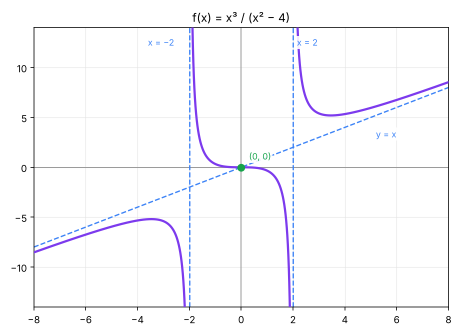
Qué ves en el dibujo: tres trozos de curva, separados por las dos rayas azules verticales (x = −2 y x = 2), que son asíntotas. La raya azul inclinada es la asíntota oblicua y = x. El único punto verde es el (0, 0): ahí corta los dos ejes. El trozo de en medio baja desde arriba hasta abajo sin parar.
Dibujo del método: la línea con los puntos y los números que probamos. Rojo = punto prohibido. Azul = número que pruebo y lo que sale. Verde = cortes. Para las horizontales miro los dos extremos de la línea.
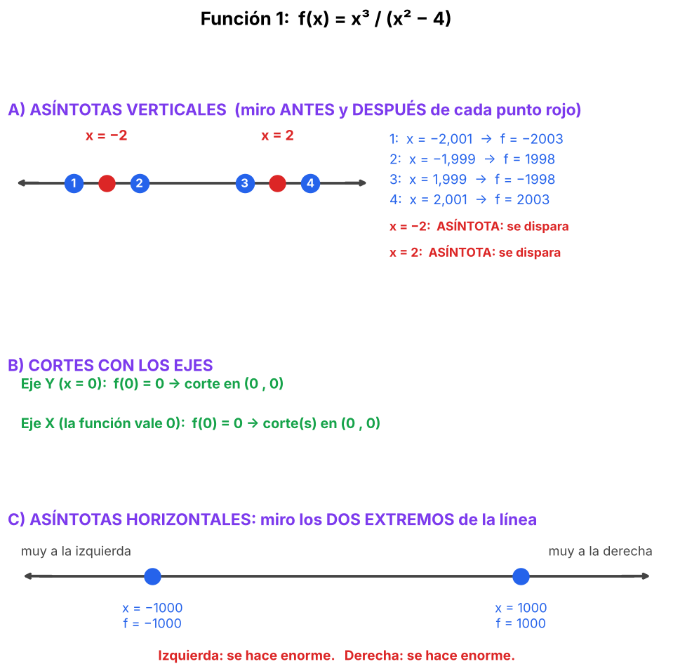
1. Dominio
1Mira el denominador: x² − 4.
2Iguálalo a cero: x² − 4 = 0.
3Pasa el 4 al otro lado: x² = 4.
4Qué números multiplicados por sí mismos dan 4: el 2 (2·2 = 4) y el −2 ((−2)·(−2) = 4).
5Esos dos números se quitan.
Dominio: todos los números menos el −2 y el 2. Se escribe ℝ − {−2, 2}.
2. Par o impar
1Mira si el dominio es simétrico: quita el −2 y el 2, que son opuestos. Sí es simétrico.
2Cambia x por −x: f(−x) = (−x)³ / ((−x)² − 4).
3Calcula (−x)³: son tres signos menos multiplicados, queda −x³.
4Calcula (−x)²: dos signos menos se compensan, queda x².
5Resultado: f(−x) = −x³ / (x² − 4).
6Compara con f(x) cambiada de signo: −f(x) = −x³ / (x² − 4). Es lo mismo.
f(−x) = −f(x): la función es IMPAR.
3. Corte con el eje Y
1El eje Y se corta cuando x = 0. Comprueba que el 0 está en el dominio: sí.
2Calcula f(0) = 0³ / (0² − 4) = 0 / (−4) = 0.
Corte en (0, 0).
4. Corte con el eje X
1El eje X se corta cuando la función vale 0. Una fracción solo vale 0 si lo de arriba vale 0.
2Iguala el numerador a cero: x³ = 0.
3El único número que multiplicado por sí mismo tres veces da 0 es el 0. Así que x = 0.
4Comprueba que el 0 está en el dominio: sí.
Corte en (0, 0), el mismo punto de antes.
5. Asíntotas verticales
1Los candidatos son los números que anulan el denominador: x = 2 y x = −2.
2Truco de los dos segundos: mete esos números en el numerador.
3Con x = 2: 2³ = 8. No es cero.
4Con x = −2: (−2)³ = −8. No es cero.
5Arriba NO da cero, así que no son agujeros.
Asíntotas verticales: x = 2 y x = −2.
6. Asíntota horizontal u oblicua
1Mira los grados: arriba 3 (x³), abajo 2 (x²).
2Arriba tiene un grado más que abajo. Eso significa que hay asíntota OBLICUA, y por eso NO hay horizontal.
3Haz la división de x³ entre (x² − 4). ¿Cuántas veces cabe x² en x³? x veces.
4Multiplica ese x por el divisor completo: x · (x² − 4) = x³ − 4x.
5Resta: x³ − (x³ − 4x) = 4x. Eso es lo que sobra.
6Así: x³/(x²−4) = x + 4x/(x²−4).
7Comprueba que el trocito sobrante se hace pequeño: con x = 100, 4x/(x²−4) = 400/9996 ≈ 0,04. Con x = 1000 vale 0,004.
Asíntota oblicua: y = x. Asíntota horizontal: no hay.
7. Rango
1Fíjate en el trozo de en medio, entre −2 y 2.
2Cerca de x = −2 (por la derecha), arriba vale −8 y abajo es un número negativo muy pequeño: sale +∞.
3Cerca de x = 2 (por la izquierda), arriba vale 8 y abajo es un negativo muy pequeño: sale −∞.
4Entre medias la curva no tiene saltos. Si va de +∞ a −∞ sin saltos, pasa por todos los números.
Rango: ℝ (todos los números).
Resumen de la función 1:
Apartado
Respuesta
Cómo ha salido
Dominio
ℝ − {−2, 2}
x² − 4 = 0 da x = ±2
Par o impar
IMPAR
f(−x) = −f(x) y el dominio es simétrico
Corte eje Y
(0, 0)
f(0) = 0
Corte eje X
(0, 0)
x³ = 0 da x = 0
Asíntotas verticales
x = 2 y x = −2
Arriba vale ±8, no se anula
Asíntota horizontal
No hay
Hay oblicua
Asíntota oblicua
y = x
x³ ÷ (x² − 4) = x, con resto 4x
Rango
ℝ
El trozo de en medio va de +∞ a −∞
Función 2. RACIONAL: f(x) = (x² − 1) / (x² + 2x)
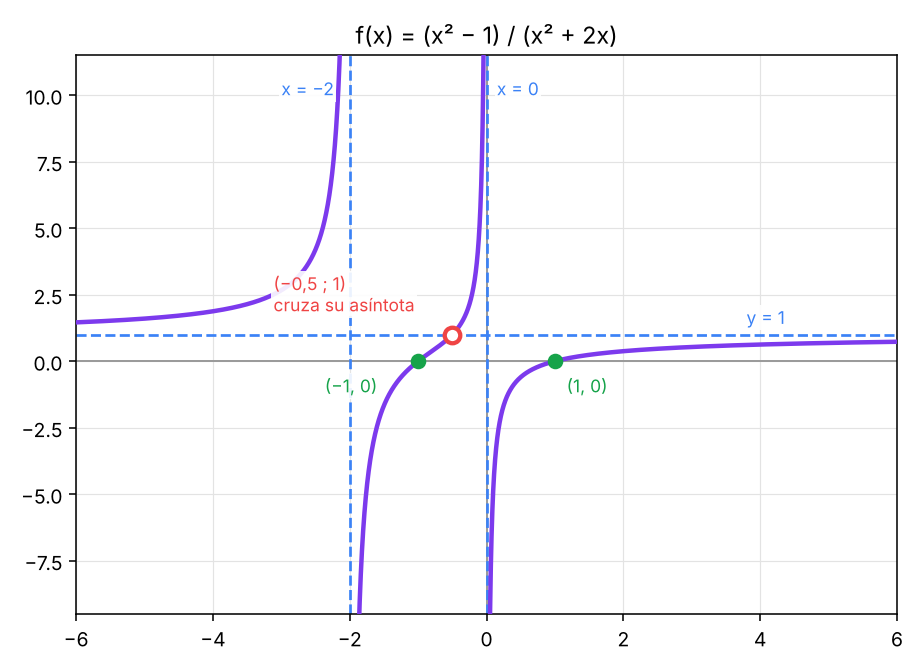
Qué ves en el dibujo: tres trozos, separados por las rayas verticales x = −2 y x = 0. La raya horizontal y = 1 es la asíntota. Los puntos verdes son los cortes con el eje X, en (−1, 0) y (1, 0). El círculo rojo en (−0,5 ; 1) es un punto donde la curva SÍ toca su asíntota horizontal, cerca del centro.
Dibujo del método: la línea con los puntos y los números que probamos. Rojo = punto prohibido. Azul = número que pruebo y lo que sale. Verde = cortes. Para las horizontales miro los dos extremos de la línea.
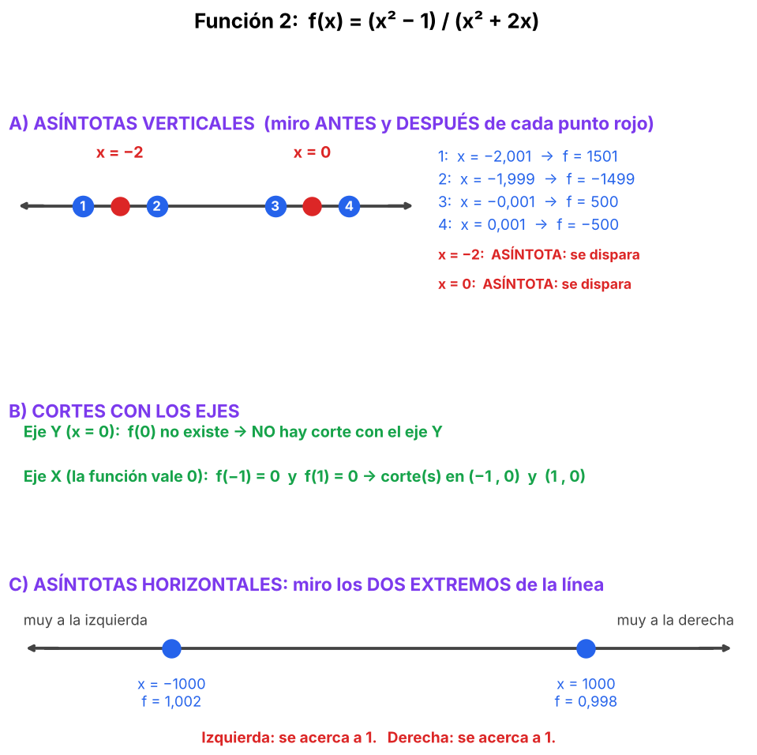
1. Dominio
1Mira el denominador: x² + 2x.
2Iguálalo a cero: x² + 2x = 0.
3Saca x como factor común: x · (x + 2) = 0.
4Un producto vale cero si alguno de sus factores vale cero: x = 0, o x + 2 = 0, que da x = −2.
5Esos dos números se quitan.
Dominio: ℝ − {−2, 0}.
2. Par o impar
1Mira si el dominio es simétrico: quita el −2 pero no quita el 2. No es simétrico.
2Si el dominio no es simétrico, la función no puede ser ni par ni impar. Ya está.
3Comprobación: f(−x) = (x² − 1)/(x² − 2x). No es igual a f(x) ni a −f(x).
NI PAR NI IMPAR.
3. Corte con el eje Y
1El eje Y se corta con x = 0.
2Pero x = 0 está prohibido (anula el denominador).
NO hay corte con el eje Y.
4. Corte con el eje X
1Iguala el numerador a cero: x² − 1 = 0.
2Pasa el 1: x² = 1.
3Números que multiplicados por sí mismos dan 1: el 1 y el −1.
4Comprueba que están en el dominio: ni el 1 ni el −1 son 0 o −2. Valen los dos.
Cortes en (−1, 0) y (1, 0).
5. Asíntotas verticales
1Los candidatos son x = 0 y x = −2.
2Mete cada uno en el numerador (x² − 1).
3Con x = 0: 0 − 1 = −1. No es cero.
4Con x = −2: 4 − 1 = 3. No es cero.
5No hay agujeros.
Asíntotas verticales: x = 0 y x = −2.
6. Asíntota horizontal u oblicua
1Grado de arriba: 2. Grado de abajo: 2. Son iguales: hay horizontal.
2El número es el cociente de los números que acompañan a x². Arriba 1·x², abajo 1·x². 1 dividido entre 1 es 1.
Asíntota horizontal: y = 1. Oblicua: no hay (ya hay horizontal).
7. Rango
1Iguala a y: y = (x² − 1)/(x² + 2x).
2Multiplica en cruz: y·(x² + 2x) = x² − 1.
3Quita paréntesis: y·x² + 2y·x = x² − 1.
4Pasa todo a la izquierda: y·x² − x² + 2y·x + 1 = 0.
5Saca x² factor común: (y − 1)·x² + 2y·x + 1 = 0. Es una ecuación de segundo grado en x.
6Para que tenga solución real, el discriminante tiene que ser mayor o igual que 0. Discriminante = (2y)² − 4·(y − 1)·1 = 4y² − 4y + 4.
7Divide entre 4: y² − y + 1. Probando números: con y = 0 vale 1, con y = 1 vale 1, con y = 0,5 vale 0,75. Es siempre positivo, así que siempre hay solución.
8El caso y = 1 hay que mirarlo aparte, porque desaparece el término de x². Queda 2x + 1 = 0, que da x = −0,5. Está en el dominio, así que el 1 SÍ se alcanza.
9Por último, comprueba que las soluciones no sean 0 ni −2. Si x = 0, la ecuación da 1 = 0, imposible. Si x = −2, da −3 = 0, imposible. Nunca salen.
Rango: ℝ (todos los números).
Resumen de la función 2:
Apartado
Respuesta
Cómo ha salido
Dominio
ℝ − {−2, 0}
x(x + 2) = 0
Par o impar
NI PAR NI IMPAR
El dominio no es simétrico
Corte eje Y
NO HAY
x = 0 está prohibido
Corte eje X
(−1, 0) y (1, 0)
x² − 1 = 0
Asíntotas verticales
x = 0 y x = −2
Arriba vale −1 y 3, no se anula
Asíntota horizontal
y = 1
Grados iguales, 1 entre 1
Asíntota oblicua
No hay
Ya hay horizontal
Rango
ℝ
El discriminante nunca es negativo
Función 3. RAÍZ: f(x) = √(x² − 4) / x
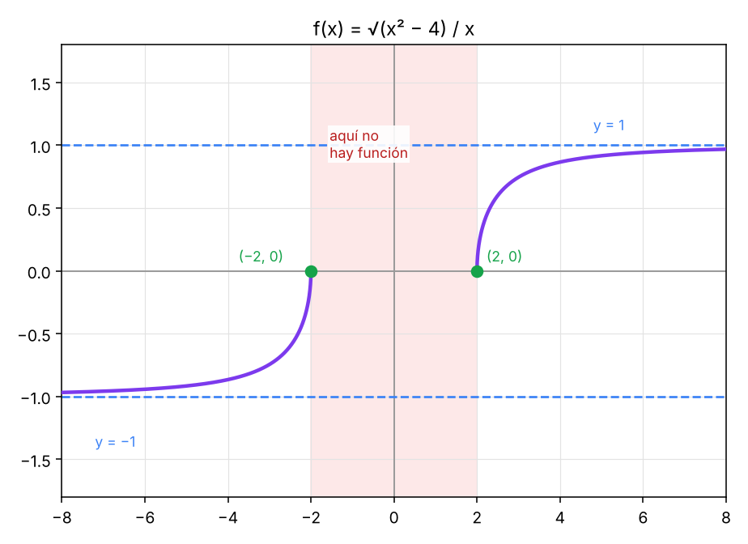
Qué ves en el dibujo: dos trozos de curva, uno a la derecha (desde x = 2) y otro a la izquierda (hasta x = −2). La franja rosa del medio es la zona prohibida: ahí no hay función. Las dos rayas azules horizontales son y = 1 e y = −1. Los puntos verdes (−2, 0) y (2, 0) son los cortes con el eje X. Fíjate: las curvas se acercan a las rayas pero se quedan siempre dentro de ellas, entre −1 y 1.
Dibujo del método: la línea con los puntos y los números que probamos. Rojo = punto prohibido. Azul = número que pruebo y lo que sale. Verde = cortes. Para las horizontales miro los dos extremos de la línea.
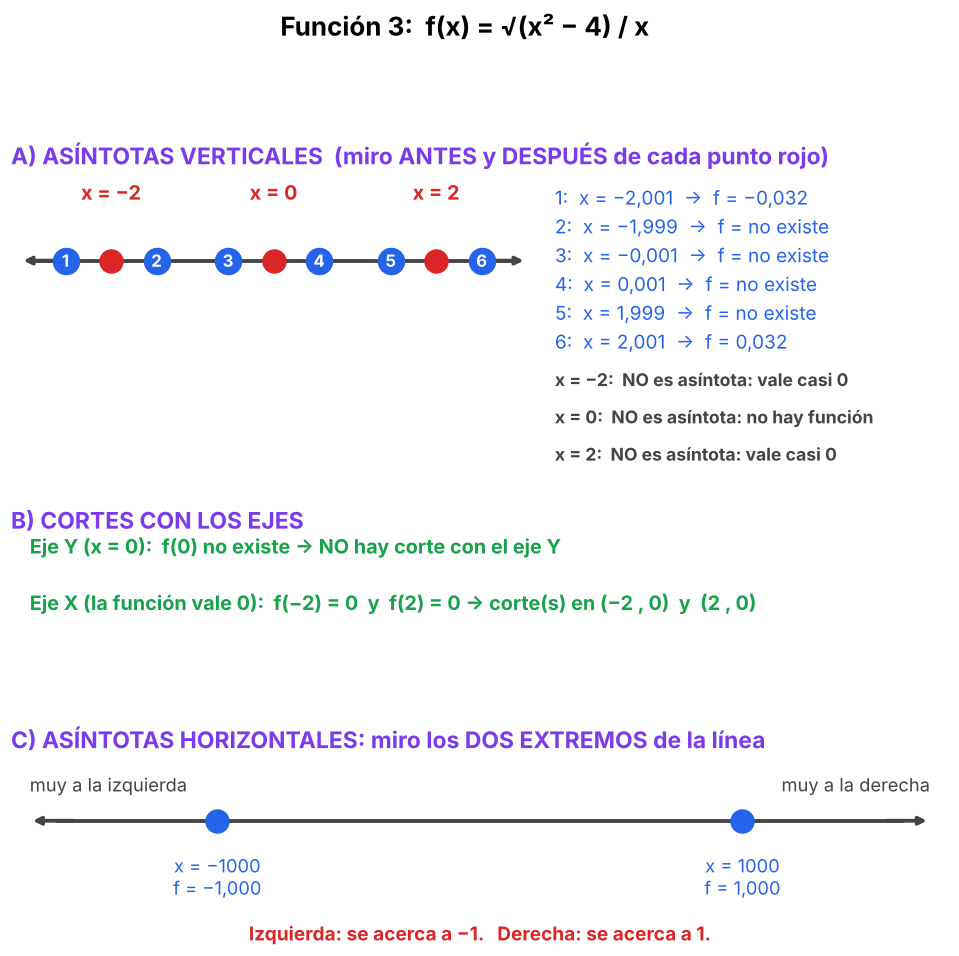
1. Dominio
1Mira lo que hay dentro de la raíz: x² − 4.
2Una raíz cuadrada no admite números negativos dentro. Hace falta x² − 4 ≥ 0.
3Pasa el 4: x² ≥ 4.
4Prueba números. x = 3: 3² = 9, y 9 ≥ 4, vale. x = 1: 1² = 1, y 1 ≥ 4 es falso, no vale.
5Prueba negativos. x = −3: (−3)² = 9, y 9 ≥ 4, vale (un negativo al cuadrado sale positivo). x = −1: 1 ≥ 4 es falso, no vale.
6Prueba los bordes. x = 2: 4 ≥ 4, vale. x = −2: 4 ≥ 4, vale.
7Conclusión de la raíz: valen x ≥ 2 y x ≤ −2.
8Mira el denominador: x. No puede ser 0. Pero el 0 ya estaba fuera por la raíz, así que no quita nada más.
Dominio: (−∞, −2] ∪ [2, +∞).
2. Par o impar
1Mira si el dominio es simétrico: si el 3 vale, el −3 también; si el 2 vale, el −2 también. Sí es simétrico.
2Cambia x por −x: f(−x) = √((−x)² − 4) / (−x).
3Dentro de la raíz, (−x)² = x². Queda √(x² − 4) / (−x).
4Saca el signo menos del denominador: f(−x) = −√(x² − 4) / x.
5Eso es −f(x).
6Comprobación con números: f(3) = √5 / 3 ≈ 0,745. f(−3) = √5 / (−3) ≈ −0,745. Son opuestos.
f(−x) = −f(x): la función es IMPAR.
3. Corte con el eje Y
1El eje Y se corta con x = 0.
2El 0 NO está en el dominio (está en la franja prohibida).
NO hay corte con el eje Y.
4. Corte con el eje X
1Una fracción vale 0 si lo de arriba vale 0: √(x² − 4) = 0.
2Una raíz vale 0 solo si lo de dentro vale 0: x² − 4 = 0.
3Pasa el 4: x² = 4. Entonces x = 2 o x = −2.
4Comprueba el dominio: el 2 y el −2 SÍ están (son los bordes).
Cortes en (−2, 0) y (2, 0).
5. Asíntotas verticales
1Una asíntota vertical aparece cuando la función se dispara hacia arriba o hacia abajo al acercarte a un número.
2El único número que anula el denominador es x = 0. Pero al 0 no te puedes acercar, porque todo lo de entre −2 y 2 está prohibido.
3Mira los bordes x = 2 y x = −2: ahí la función vale 0. Un número normal, no se dispara.
Asíntotas verticales: no hay.
6. Asíntota horizontal u oblicua
1Pregunta: ¿a qué número se acerca f(x) cuando x se hace enorme?
2Prueba con números positivos. x = 10: √96 / 10 = 9,80 / 10 = 0,980. x = 100: √9996 / 100 = 99,98 / 100 = 0,9998. x = 1000: sale 0,999998. Se acerca a 1.
3Prueba con negativos. x = −10: −0,980. x = −100: −0,9998. Se acerca a −1.
4Por qué se usan el 10, el 100 y el 1000: son solo números de ejemplo. Vale cualquier número grande. Tiene que ser grande porque así el término pequeño (el 4 o el 9) casi no pesa; con x = 3 o x = 4 no te enseñaría nada. Se prueban varios para ver la tendencia, y en el examen basta la regla con letras.
5Ahora la razón con letras. Dentro de la raíz saca x² como factor común: x² − 4 = x² · (1 − 4/x²).
6Parte la raíz en dos: √(x² − 4) = √(x²) · √(1 − 4/x²).
7Atención con √(x²): NO siempre vale x. Vale x si x es positivo y vale −x si x es negativo. Por ejemplo √((−5)²) = √25 = 5 = −(−5).
8Caso x muy grande y positivo: √(x²) = x. Queda f(x) = x · √(1 − 4/x²) / x. La x de arriba y la de abajo se cancelan: f(x) = √(1 − 4/x²).
9Cuando x es enorme, 4/x² es casi 0. Queda √(1 − 0) = √1 = 1.
10Caso x muy grande y negativo: √(x²) = −x. Queda f(x) = −x · √(1 − 4/x²) / x = −√(1 − 4/x²).
11Con 4/x² casi 0 queda −√1 = −1.
Asíntotas horizontales: y = 1 por la derecha y y = −1 por la izquierda. Oblicua: no hay.
7. Rango (el apartado que más cuesta, con todos los pasos)
1Idea: el rango son todos los valores de y que la función puede dar. Para saberlo, cogemos una y cualquiera y preguntamos: ¿existe algún x que dé esa y?
2Escribe y = √(x² − 4) / x.
3Multiplica los dos lados por x para quitar la fracción: y · x = √(x² − 4).
4Eleva los dos lados al cuadrado para quitar la raíz: y² · x² = x² − 4. (Al elevar al cuadrado puede colarse alguna solución falsa; la comprobamos al final.)
5Pasa la x² de la derecha a la izquierda: y² · x² − x² = −4.
6Saca x² como factor común: x² · (y² − 1) = −4.
7Divide los dos lados entre (y² − 1): x² = −4 / (y² − 1).
8Cambia el signo de arriba y de abajo (no cambia el valor): x² = 4 / (1 − y²).
9Ahora la clave. x² es un número al cuadrado, así que NUNCA es negativo. Arriba hay un 4, que es positivo. Para que la fracción sea positiva, el denominador 1 − y² tiene que ser positivo. Si fuera negativo saldría x² negativo (imposible), y si fuera 0 estaríamos dividiendo entre 0 (imposible).
10Condición: 1 − y² > 0. Pasa y²: 1 > y², es decir y² < 1.
11¿Qué números al cuadrado dan menos de 1? Prueba. y = 0,5: 0,25, menor que 1, vale. y = −0,5: 0,25, vale. y = 2: 4, mayor que 1, no vale. y = 1: da 1, que no es menor que 1, no vale. y = −1: igual, no vale.
12Entonces valen los y entre −1 y 1, sin incluir ni el −1 ni el 1.
13Comprobación con un número. Elige y = 0,5: 1 − 0,25 = 0,75, así que x² = 4 / 0,75 = 5,33 y x = 2,31. Mira: f(2,31) = √(5,33 − 4) / 2,31 = √1,33 / 2,31 = 1,155 / 2,31 = 0,5. Sale justo el y que elegimos.
14Falta el signo de x. Como y · x = √(...) y una raíz nunca es negativa, y y x tienen que tener el mismo signo. Para y = 0,5 sirve x = +2,31. Para y = −0,5 sirve x = −2,31. Para y = 0 sirven x = 2 y x = −2.
15Conexión con el dibujo: las curvas se quedan siempre entre las rayas y = −1 e y = 1, y se acercan a ellas sin llegar nunca a tocarlas.
Qué ves en el dibujo: tres trozos. Los dos de fuera (a la izquierda de −1 y a la derecha de 1) empiezan altísimos pegados a las rayas verticales y bajan hacia la raya horizontal y = 1 sin tocarla. El de en medio es un "cuenco boca abajo": su punto más alto es el (0, −1), y luego cae hacia abajo por los dos lados. El dibujo es simétrico: lo de la izquierda es el espejo de lo de la derecha.
Dibujo del método: la línea con los puntos y los números que probamos. Rojo = punto prohibido. Azul = número que pruebo y lo que sale. Verde = cortes. Para las horizontales miro los dos extremos de la línea.
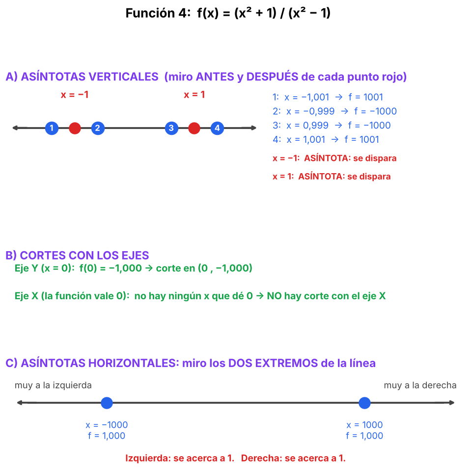
1. Dominio
1Mira el denominador: x² − 1.
2Iguálalo a cero: x² − 1 = 0.
3Pasa el 1: x² = 1.
4Números que al cuadrado dan 1: el 1 (1·1 = 1) y el −1 ((−1)·(−1) = 1).
5Esos dos se quitan.
Dominio: ℝ − {−1, 1}.
2. Par o impar
1El dominio es simétrico (quita el −1 y el 1, que son opuestos).
2Cambia x por −x: f(−x) = ((−x)² + 1) / ((−x)² − 1).
5Con números: f(2) = 5/3 y f(−2) = 5/3. Mismo resultado.
f(−x) = f(x): la función es PAR (el dibujo es simétrico respecto al eje Y).
3. Corte con el eje Y
1El eje Y se corta con x = 0. El 0 está en el dominio.
2f(0) = (0 + 1) / (0 − 1) = 1 / (−1) = −1.
Corte en (0, −1).
4. Corte con el eje X
1Una fracción vale 0 si el numerador vale 0: x² + 1 = 0.
2Pasa el 1: x² = −1.
3Ningún número al cuadrado da negativo.
NO hay corte con el eje X.
5. Asíntotas verticales
1Candidatos: x = 1 y x = −1.
2Mete cada uno en el numerador (x² + 1).
3Con x = 1: 1 + 1 = 2. No es cero.
4Con x = −1: 1 + 1 = 2. No es cero.
5Arriba no da cero, así que no son agujeros.
Asíntotas verticales: x = 1 y x = −1.
6. Asíntota horizontal u oblicua
1Grado de arriba: 2. Grado de abajo: 2. Iguales, hay horizontal.
2Cociente de los números que acompañan a x²: 1 entre 1 = 1.
3Comprobación: x = 100: (10000 + 1) / (10000 − 1) = 10001 / 9999 = 1,0002. Se acerca a 1.
Asíntota horizontal: y = 1. Oblicua: no hay.
7. Rango
1Iguala: y = (x² + 1) / (x² − 1).
2Multiplica en cruz: y · (x² − 1) = x² + 1.
3Quita el paréntesis: y·x² − y = x² + 1.
4Pasa las x² a la izquierda y lo demás a la derecha: y·x² − x² = y + 1.
5Saca x² factor común: x² · (y − 1) = y + 1.
6Divide entre (y − 1): x² = (y + 1) / (y − 1).
7x² nunca es negativo, así que esta fracción tiene que ser mayor o igual que 0.
8Una fracción es positiva si arriba y abajo tienen el mismo signo. Los números clave son y = −1 (anula arriba) y y = 1 (anula abajo). Prueba una zona de cada lado.
Qué ves en el dibujo: una recta inclinada y = x (pasa por (0, 0) y sube con pendiente 1) con DOS círculos rojos vacíos: uno en (−2, −2) y otro en (2, 2). Esos círculos son los agujeros: la recta tiene un hueco justo ahí. No hay rayas azules, porque no hay asíntotas verticales.
Dibujo del método: la línea con los puntos y los números que probamos. Rojo = punto prohibido. Azul = número que pruebo y lo que sale. Verde = cortes. Para las horizontales miro los dos extremos de la línea.
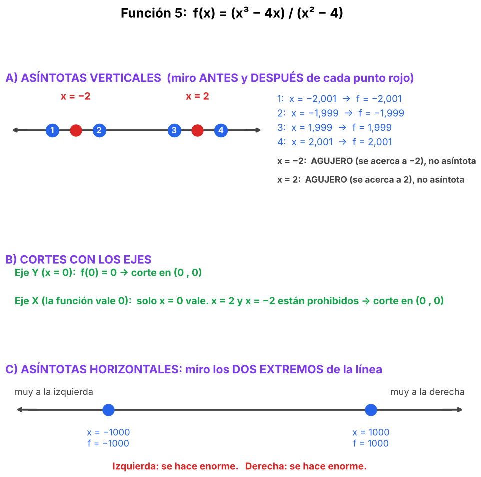
1. Dominio
1Mira el denominador de la función ORIGINAL: x² − 4.
2Iguálalo a cero: x² − 4 = 0, o sea x² = 4.
3x = 2 o x = −2.
4Se quitan los dos, aunque luego la fracción se simplifique. El dominio se mira SIEMPRE antes de simplificar.
Dominio: ℝ − {−2, 2}.
2. Par o impar
1El dominio es simétrico.
2Cambia x por −x: f(−x) = ((−x)³ − 4(−x)) / ((−x)² − 4).
4Cero arriba y cero abajo: es un AGUJERO, no una asíntota.
5Para ver a qué altura está el agujero, simplifica: factoriza arriba, x³ − 4x = x · (x² − 4). Entonces f(x) = x · (x² − 4) / (x² − 4) = x.
6Mete cada x en la recta y = x: el agujero de x = 2 está en (2, 2), y el de x = −2 está en (−2, −2).
Asíntotas verticales: no hay. Hay dos agujeros: (−2, −2) y (2, 2).
6. Asíntota horizontal u oblicua
1Grado de arriba: 3. Grado de abajo: 2. Arriba tiene un grado más, hay oblicua y NO hay horizontal.
2Haz la división: x³ − 4x entre x² − 4. ¿Cuántas veces cabe x² en x³? x veces.
3Multiplica: x · (x² − 4) = x³ − 4x.
4Resta: (x³ − 4x) − (x³ − 4x) = 0. No sobra nada.
5Resultado: la división da exactamente x.
Asíntota oblicua: y = x (la función es esa misma recta, menos los dos agujeros). Horizontal: no hay.
7. Rango
1Después de simplificar, f(x) = x, pero solo para los x del dominio (todos menos el 2 y el −2).
2La recta y = x da todos los valores de y, EXCEPTO los que vienen de los x prohibidos.
3x = 2 daría y = 2. x = −2 daría y = −2. Esos dos valores no se alcanzan, son los huecos del dibujo.
Rango: ℝ − {−2, 2}.
Resumen de la función 5:
Apartado
Respuesta
Cómo ha salido
Dominio
ℝ − {−2, 2}
x² − 4 = 0 (antes de simplificar)
Par o impar
IMPAR
f(−x) = −f(x)
Corte eje Y
(0, 0)
f(0) = 0
Corte eje X
(0, 0)
x = 0; ±2 están prohibidos
Asíntotas verticales
No hay (agujeros en (−2, −2) y (2, 2))
Arriba también da 0
Asíntota horizontal
No hay
Grado 3 contra grado 2
Asíntota oblicua
y = x
La división da x sin resto
Rango
ℝ − {−2, 2}
Falta lo que darían x = ±2
Función 6. RAÍZ EN EL DENOMINADOR: f(x) = x / √(x² − 9)
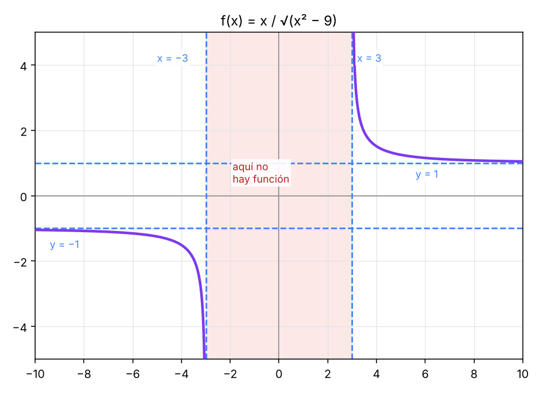
Qué ves en el dibujo: dos trozos de curva, uno a la derecha de x = 3 y otro a la izquierda de x = −3, con una franja rosa en medio (zona prohibida). Las rayas azules verticales x = 3 y x = −3 son asíntotas verticales: la curva se dispara pegada a ellas. A lo lejos, cada trozo se acerca a una raya horizontal: y = 1 por la derecha e y = −1 por la izquierda. No hay ningún punto verde: no corta a ningún eje.
Dibujo del método: la línea con los puntos y los números que probamos. Rojo = punto prohibido. Azul = número que pruebo y lo que sale. Verde = cortes. Para las horizontales miro los dos extremos de la línea.
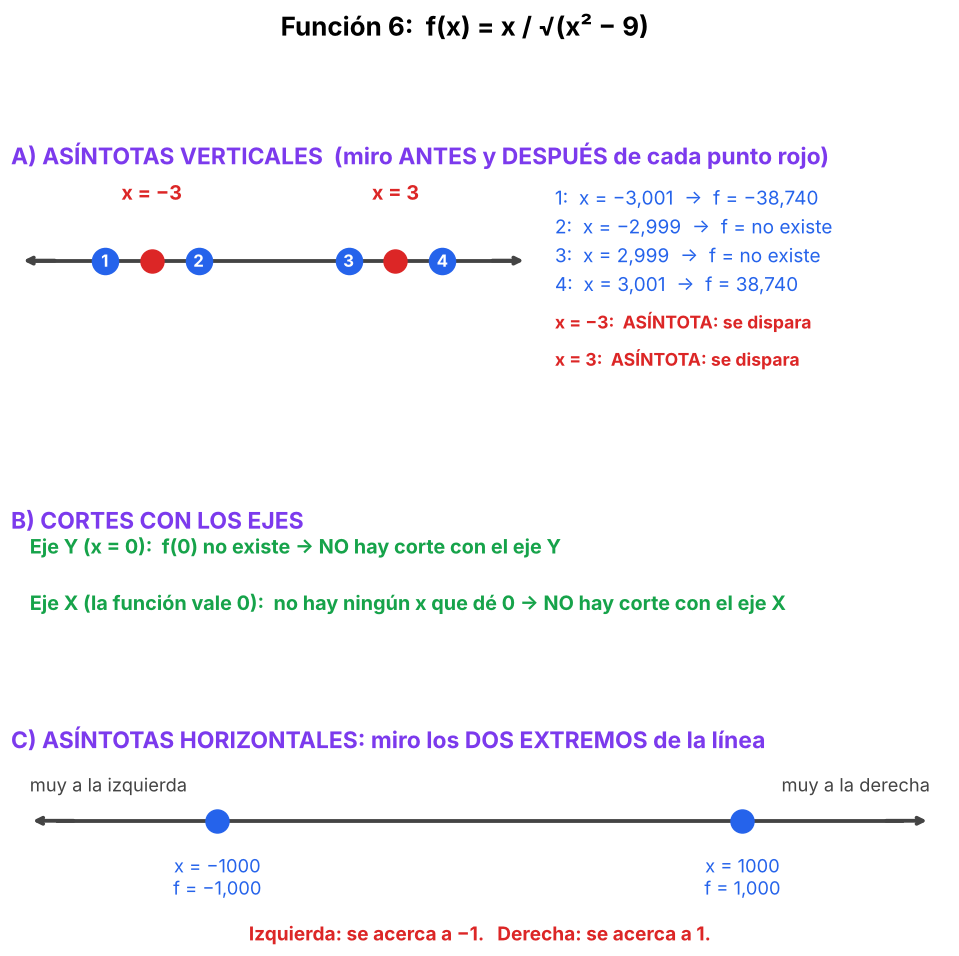
1. Dominio
1Mira la raíz: √(x² − 9). Lo de dentro tiene que ser mayor o igual que 0.
2PERO además la raíz está en el DENOMINADOR, y el denominador no puede valer 0. Así que lo de dentro tiene que ser estrictamente mayor que 0: x² − 9 > 0.
3Pasa el 9: x² > 9.
4Prueba números. x = 4: 16 > 9, vale. x = 2: 4 > 9, falso. x = −4: 16 > 9, vale. x = 3: 9 > 9, falso (da igual, no vale).
5Valen los x mayores que 3 y los menores que −3.
Dominio: (−∞, −3) ∪ (3, +∞).
2. Par o impar
1El dominio es simétrico.
2Cambia x por −x: f(−x) = (−x) / √((−x)² − 9) = −x / √(x² − 9).
5Por qué: arriba, x cambia de signo al pasar a −x. Abajo, √(x² − 9) NO cambia, porque (−5)² = 5² y una raíz siempre da positivo. Algo que cambia de signo entre algo que no cambia da algo que cambia de signo: impar. (El x/x = 1 de la asíntota solo vale a la derecha; a la izquierda es x/(−x) = −1.)
f(−x) = −f(x): la función es IMPAR.
3. Corte con el eje Y
1x = 0 no está en el dominio (está en la franja prohibida).
NO hay corte con el eje Y.
4. Corte con el eje X
1Una fracción vale 0 si el numerador vale 0: x = 0.
2Pero x = 0 no está en el dominio.
NO hay corte con el eje X.
5. Asíntotas verticales
1Candidatos: los x que anulan el denominador, √(x² − 9) = 0, es decir x² − 9 = 0, x = 3 y x = −3.
2Mira el numerador en cada uno: con x = 3 vale 3, con x = −3 vale −3. NO son cero.
3Numerador distinto de cero y denominador que tiende a 0: la fracción se dispara.
4Con números, x = 3,01: 3,01 / √(9,06 − 9) = 3,01 / 0,245 = 12,3. Con x = 3,0001: 3,0001 / 0,0245 = 122. Cada vez más grande: va a +∞.
5Por el lado izquierdo, x = −3,01: −3,01 / 0,245 = −12,3. Va a −∞.
Asíntotas verticales: x = 3 y x = −3.
6. Asíntota horizontal u oblicua
1Con números. x = 10: 10 / √91 = 10 / 9,54 = 1,048. x = 100: 100 / √9991 = 100 / 99,95 = 1,0005. Se acerca a 1.
2x = −10: −1,048. x = −100: −1,0005. Se acerca a −1.
3Por qué se usan el 10, el 100 y el 1000: son solo números de ejemplo. Vale cualquier número grande. Tiene que ser grande porque así el término pequeño (el 4 o el 9) casi no pesa; con x = 3 o x = 4 no te enseñaría nada. Se prueban varios para ver la tendencia, y en el examen basta la regla con letras.
4Con letras. Dentro de la raíz saca x²: x² − 9 = x² · (1 − 9/x²).
5Parte la raíz: √(x² − 9) = √(x²) · √(1 − 9/x²).
6Recuerda: √(x²) vale x si x es positivo y vale −x si x es negativo.
7Caso x positivo: f(x) = x / (x · √(1 − 9/x²)) = 1 / √(1 − 9/x²). Con x enorme, 9/x² es casi 0, queda 1 / √1 = 1.
8Caso x negativo: f(x) = x / (−x · √(1 − 9/x²)) = −1 / √(1 − 9/x²). Con x enorme, queda −1.
9Fíjate: a la derecha abajo queda x · √(...) y x/x = 1. A la izquierda abajo queda −x · √(...) y x/(−x) = −1. Por eso el signo cambia entre un lado y otro.
Asíntotas horizontales: y = 1 (derecha) e y = −1 (izquierda). Oblicua: no hay.
7. Rango
1Iguala: y = x / √(x² − 9).
2Multiplica por la raíz: y · √(x² − 9) = x.
3Eleva al cuadrado: y² · (x² − 9) = x².
4Quita el paréntesis: y²·x² − 9y² = x².
5Pasa las x² a un lado: y²·x² − x² = 9y².
6Saca x² factor común: x² · (y² − 1) = 9y².
7Divide: x² = 9y² / (y² − 1).
8Aquí x² tiene que ser mayor que 9 (el dominio es |x| > 3), así que x² es positivo. El numerador 9y² es positivo (si y ≠ 0), luego el denominador y² − 1 tiene que ser positivo: y² > 1.
Qué ves en el dibujo: dos trozos de curva. El de la derecha (x > 1) empieza altísimo pegado a la raya x = 1 y baja hacia la raya y = 0 sin tocarla. El de la izquierda (x < −1) empieza en la raya y = 0 y se hunde hacia abajo pegado a la raya x = −1. Franja rosa en medio: zona prohibida. Un trozo queda siempre por encima del eje X y el otro siempre por debajo.
Dibujo del método: la línea con los puntos y los números que probamos. Rojo = punto prohibido. Azul = número que pruebo y lo que sale. Verde = cortes. Para las horizontales miro los dos extremos de la línea.
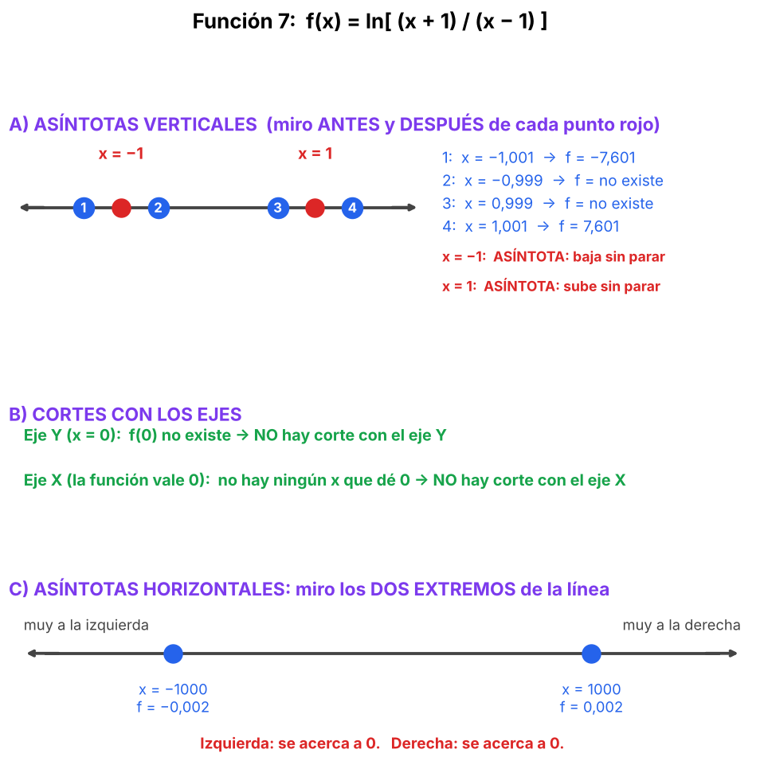
1. Dominio
1Un logaritmo solo admite números POSITIVOS dentro (ni 0 ni negativos). Hace falta (x + 1) / (x − 1) > 0.
2Además el denominador no puede ser 0: x ≠ 1.
3Una fracción es positiva si arriba y abajo tienen el mismo signo. Los números clave son x = −1 (arriba vale 0) y x = 1 (abajo vale 0). Se prueba un número en cada zona.
4Zona x < −1, por ejemplo x = −2: (−2 + 1) / (−2 − 1) = (−1) / (−3) = 1/3. Positivo, vale.
5Zona entre −1 y 1, por ejemplo x = 0: (0 + 1) / (0 − 1) = −1. Negativo, NO vale.
6Zona x > 1, por ejemplo x = 2: (2 + 1) / (2 − 1) = 3. Positivo, vale.
7Los números clave: x = −1 daría ln(0), imposible. x = 1 daría dividir entre 0, imposible.
Dominio: (−∞, −1) ∪ (1, +∞).
2. Par o impar
1El dominio es simétrico.
2Cambia x por −x: f(−x) = ln[ (−x + 1) / (−x − 1) ].
3Multiplica arriba y abajo por −1: (x − 1) / (x + 1). Es la fracción dada la vuelta.
4Un logaritmo de una fracción dada la vuelta cambia de signo: ln(1/u) = −ln(u). Entonces f(−x) = −f(x).
6Aquí no hay ningún "x entre x" que se cancele: la fracción nueva (x − 1)/(x + 1) es la original dada la vuelta, con el 1 y el −1 intercambiados.
f(−x) = −f(x): la función es IMPAR.
3. Corte con el eje Y
1x = 0 no está en el dominio.
NO hay corte con el eje Y.
4. Corte con el eje X
1Un logaritmo vale 0 solo si lo de dentro vale 1: ln(1) = 0.
2Iguala: (x + 1) / (x − 1) = 1.
3Multiplica por (x − 1): x + 1 = x − 1.
4Resta x a los dos lados: 1 = −1. Es imposible.
NO hay corte con el eje X.
5. Asíntotas verticales
1Mira cerca de x = 1 por la derecha. Por ejemplo x = 1,01: (2,01) / (0,01) = 201. ln(201) = 5,3. Con x = 1,0001: 20001, ln = 9,9. Va creciendo sin parar: +∞.
2Mira cerca de x = −1 por la izquierda. Por ejemplo x = −1,01: (−0,01) / (−2,01) = 0,005. ln(0,005) = −5,3. Con x = −1,0001 sale −9,9. Va a −∞.
3Los dos números se disparan, hay asíntota en cada uno.
Asíntotas verticales: x = 1 y x = −1.
6. Asíntota horizontal u oblicua
1Mira lo que hace la fracción de dentro cuando x es enorme. x = 100: 101 / 99 = 1,02. x = 1000: 1001 / 999 = 1,002. Se acerca a 1.
2ln(1) = 0. Entonces f(x) se acerca a 0.
3Regla para cualquier logaritmo: (1) calcula a qué número se acerca lo de DENTRO del ln; (2) aplica el ln a ese número; (3) eso es la asíntota horizontal. La fracción de dentro va a 1, pero la función es ln de la fracción, así que va a ln(1) = 0, no a 1.
4Con números: x = 100: ln(1,0202) = 0,02. x = −100: ln(0,9802) = −0,02. Los dos lados se acercan a 0.
Asíntota horizontal: y = 0. Oblicua: no hay.
7. Rango
1Llama u a la fracción de dentro: u = (x + 1) / (x − 1). Entonces y = ln(u).
2Despeja x en función de u: u · (x − 1) = x + 1.
3Quita el paréntesis: u·x − u = x + 1.
4Pasa los x a la izquierda: u·x − x = u + 1.
5Saca x factor común: x · (u − 1) = u + 1.
6Divide: x = (u + 1) / (u − 1).
7Esto tiene solución mientras no dividamos entre 0: u ≠ 1. Para cualquier otro u (y u siempre es positivo, porque está dentro del logaritmo) existe x.
8u puede ser cualquier número positivo menos el 1. Entonces y = ln(u) puede ser cualquier número menos ln(1) = 0.
9Comprobación: y = 1 significa u = e = 2,718. x = 3,718 / 1,718 = 2,164. Mira: ln[(3,164) / (1,164)] = ln(2,718) = 1. ✓
Rango: ℝ − {0}. El 0 nunca se alcanza, por eso no hay cortes con el eje X.
Resumen de la función 7:
Apartado
Respuesta
Cómo ha salido
Dominio
(−∞, −1) ∪ (1, +∞)
(x+1)/(x−1) > 0
Par o impar
IMPAR
La fracción se da la vuelta y el ln cambia de signo
Corte eje Y
NO HAY
0 no está en el dominio
Corte eje X
NO HAY
x + 1 = x − 1 es imposible
Asíntotas verticales
x = 1 y x = −1
La fracción de dentro se dispara o tiende a 0
Asíntota horizontal
y = 0
La fracción tiende a 1 y ln 1 = 0
Asíntota oblicua
No hay
Ya hay horizontal
Rango
ℝ − {0}
x = (u+1)/(u−1) exige u ≠ 1
Función 8. LOGARITMO: f(x) = ln[ x² / (x² − 4) ]
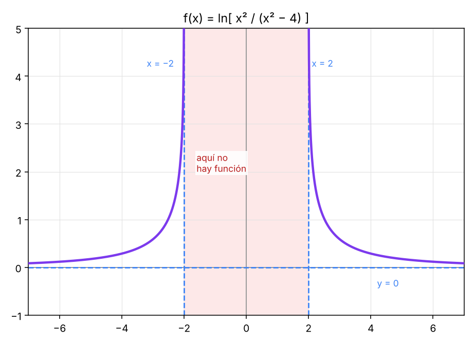
Qué ves en el dibujo: dos trozos simétricos, uno a la derecha de x = 2 y otro a la izquierda de x = −2, con una franja rosa en medio. Cada trozo empieza arriba del todo, pegado a la raya vertical, y baja acercándose a la raya y = 0 sin tocarla. Toda la curva queda por ENCIMA del eje X.
Dibujo del método: la línea con los puntos y los números que probamos. Rojo = punto prohibido. Azul = número que pruebo y lo que sale. Verde = cortes. Para las horizontales miro los dos extremos de la línea.
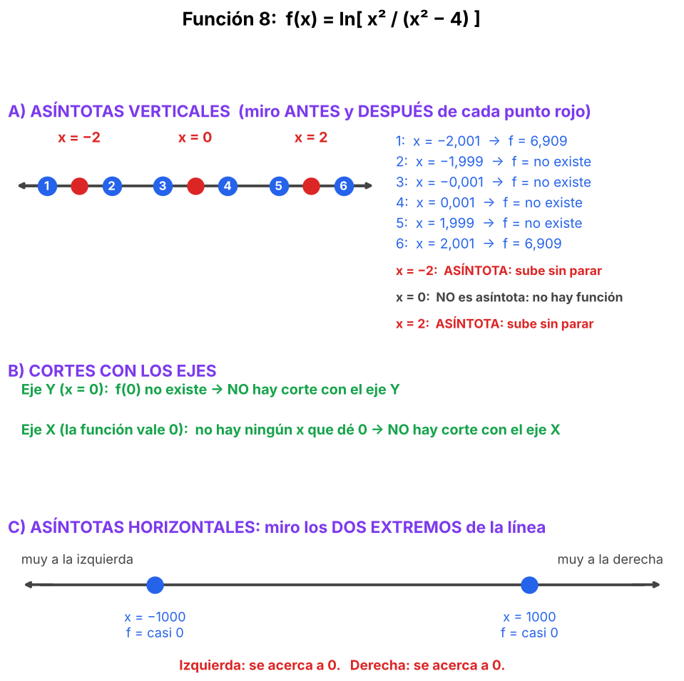
1. Dominio
1El logaritmo necesita que lo de dentro sea positivo: x² / (x² − 4) > 0.
2El numerador x² es positivo para cualquier x salvo x = 0, donde vale 0 (y ln 0 no existe). Así que x ≠ 0.
3Con el numerador positivo, la fracción es positiva solo si el denominador también: x² − 4 > 0.
4Pasa el 4: x² > 4.
5Prueba. x = 3: 9 / 5 = 1,8, positivo, vale. x = 1: 1 / (−3) = −0,33, negativo, no vale. x = 0: 0, no vale. x = −3: 9 / 5, vale.
1Mira cerca de x = 2 por la derecha. x = 2,01: x² = 4,04; x² − 4 = 0,04; fracción = 101. ln(101) = 4,6. x = 2,0001: fracción ≈ 10001, ln = 9,2. Sube sin parar.
2Por simetría pasa lo mismo cerca de x = −2 por la izquierda.
Asíntotas verticales: x = 2 y x = −2.
6. Asíntota horizontal u oblicua
1Mira la fracción de dentro con x enorme. x = 10: 100 / 96 = 1,042. x = 100: 10000 / 9996 = 1,0004. Se acerca a 1 (siempre un poco por encima).
2ln(1) = 0. Entonces f(x) se acerca a 0.
3Regla para cualquier logaritmo: (1) calcula a qué número se acerca lo de DENTRO del ln; (2) aplica el ln a ese número; (3) eso es la asíntota horizontal. La fracción de dentro va a 1, pero la función es ln de la fracción, así que va a ln(1) = 0, no a 1.
4Con números: x = 10: ln(1,042) = 0,041. x = 100: ln(1,0004) = 0,0004.
Asíntota horizontal: y = 0. Oblicua: no hay.
7. Rango
1Llama u a la fracción de dentro: u = x² / (x² − 4). Entonces y = ln(u).
2Despeja x²: u · (x² − 4) = x².
3Quita el paréntesis: u·x² − 4u = x².
4Pasa las x² a la izquierda: u·x² − x² = 4u.
5Saca x² factor común: x² · (u − 1) = 4u.
6Divide: x² = 4u / (u − 1).
7Como x² > 4, tiene que ser positivo. u es positivo (está dentro del ln), luego el denominador u − 1 también: u > 1.
8Comprobación de que con u > 1 sí se cumple x² > 4: 4u / (u − 1) > 4 equivale a 4u > 4u − 4, que es cierto siempre.
9Si u > 1, entonces y = ln(u) es positivo (ln de algo mayor que 1 es positivo).
10Con números: y = 1 significa u = e = 2,718. x² = 4 · 2,718 / 1,718 = 6,33, x = 2,52. Mira: 6,33 / (6,33 − 4) = 6,33 / 2,33 = 2,718 y ln(2,718) = 1. ✓
Rango: (0, +∞). Coincide con el dibujo: toda la curva está por encima del eje X.
Resumen de la función 8:
Apartado
Respuesta
Cómo ha salido
Dominio
(−∞, −2) ∪ (2, +∞)
x² > 4
Par o impar
PAR
Solo aparece x²
Corte eje Y
NO HAY
0 no está en el dominio
Corte eje X
NO HAY
x² = x² − 4 es imposible
Asíntotas verticales
x = 2 y x = −2
La fracción de dentro se dispara
Asíntota horizontal
y = 0
La fracción tiende a 1
Asíntota oblicua
No hay
Ya hay horizontal
Rango
(0, +∞)
x² = 4u/(u−1) exige u > 1
Función 9. EXPONENCIAL: f(x) = e^(1/x)
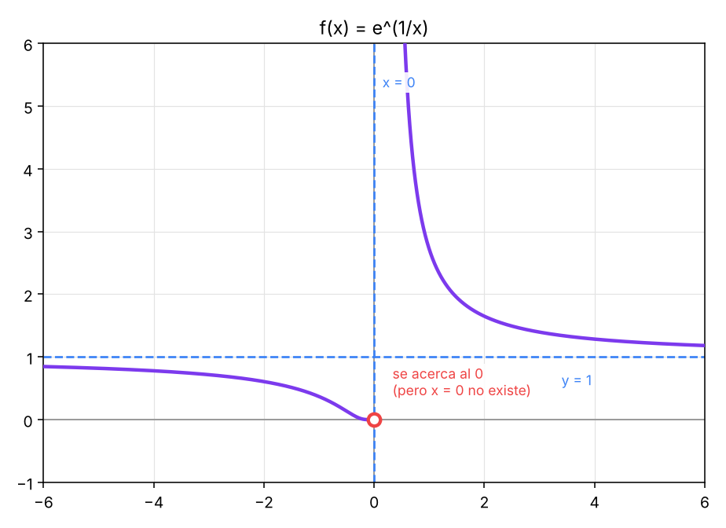
Qué ves en el dibujo: dos trozos de curva, uno a cada lado del eje Y. El de la derecha baja desde arriba del todo (pegado a la raya x = 0) hacia la raya y = 1, sin tocarla. El de la izquierda parte de la raya y = 1 y baja hacia el 0 al acercarse a x = 0, pero sin llegar a tocar el eje X. Los dos trozos quedan siempre por encima del eje X.
Dibujo del método: la línea con los puntos y los números que probamos. Rojo = punto prohibido. Azul = número que pruebo y lo que sale. Verde = cortes. Para las horizontales miro los dos extremos de la línea.
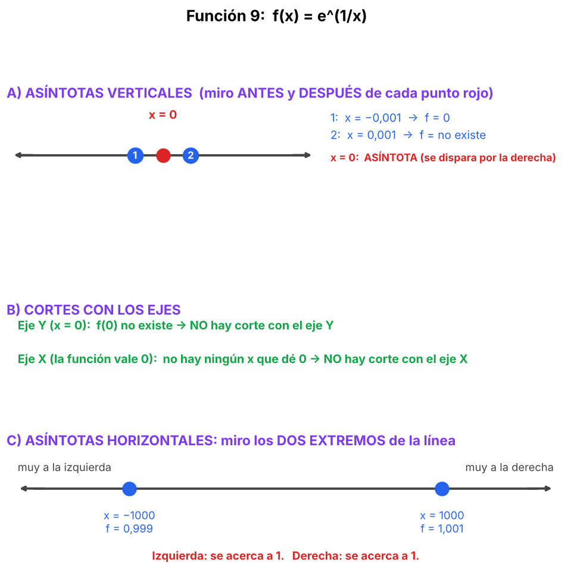
1. Dominio
1Mira el exponente: 1/x. La fracción no puede tener x = 0 abajo.
2La e elevada a algo no tiene más prohibiciones.
Dominio: ℝ − {0}.
2. Par o impar
1El dominio es simétrico.
2Cambia x por −x: f(−x) = e^(1/(−x)) = e^(−1/x).
3¿Es igual a f(x) = e^(1/x)? No.
4¿Es igual a −f(x) = −e^(1/x)? Tampoco: e elevado a algo siempre es positivo, y −f(x) es negativo.
5Con números: f(1) = e¹ = 2,718. f(−1) = e^(−1) = 0,368. No son iguales ni opuestos.
NI PAR NI IMPAR.
3. Corte con el eje Y
1x = 0 no está en el dominio.
NO hay corte con el eje Y.
4. Corte con el eje X
1e elevado a cualquier cosa es siempre mayor que 0. Nunca vale 0.
NO hay corte con el eje X.
5. Asíntotas verticales
1El único número problemático es x = 0. Mira los dos lados por separado.
2Por la derecha: x = 0,1 → 1/x = 10 → e^10 = 22 026. x = 0,01 → 1/x = 100 → e^100 es gigantesco. Va a +∞.
3Por la izquierda: x = −0,1 → 1/x = −10 → e^(−10) = 0,00005. x = −0,01 → e^(−100) ≈ 0. Va a 0, no se dispara.
4Con que se dispare por UNO solo de los lados, ya hay asíntota vertical.
Asíntota vertical: x = 0.
6. Asíntota horizontal u oblicua
1Mira el exponente cuando x es enorme: 1/x se hace casi 0. x = 100: 1/x = 0,01. x = 1000: 0,001.
2Entonces e^(1/x) se acerca a e⁰ = 1. Con números: x = 100: e^0,01 = 1,01. x = −100: e^(−0,01) = 0,99.
3Pasa igual a los dos lados.
Asíntota horizontal: y = 1. Oblicua: no hay.
7. Rango
1Llama t al exponente: t = 1/x. Cuando x recorre todo el dominio, t recorre todos los números EXCEPTO el 0 (porque 1/x nunca vale 0).
2Entonces f = e^t con t ≠ 0.
3e^t da cualquier número positivo. Pero e^t = 1 solo pasa con t = 0, que está prohibido.
4Con letras: y = e^(1/x). Toma ln en los dos lados: ln y = 1/x. Despeja: x = 1/ln(y). Necesita y > 0 (para poder hacer ln) y ln y ≠ 0 (para no dividir entre 0), o sea y ≠ 1.
Rango: (0, 1) ∪ (1, +∞). Coincide con el dibujo: el trozo izquierdo está entre 0 y 1, el derecho por encima de 1.
Resumen de la función 9:
Apartado
Respuesta
Cómo ha salido
Dominio
ℝ − {0}
1/x exige x ≠ 0
Par o impar
NI PAR NI IMPAR
f(−x) = e^(−1/x)
Corte eje Y
NO HAY
0 no está en el dominio
Corte eje X
NO HAY
e^algo nunca vale 0
Asíntotas verticales
x = 0
Por la derecha va a +∞
Asíntota horizontal
y = 1
1/x tiende a 0 y e⁰ = 1
Asíntota oblicua
No hay
Ya hay horizontal
Rango
(0, 1) ∪ (1, +∞)
t = 1/x nunca vale 0
Función 10. EXPONENCIAL: f(x) = e^(−1/x²)
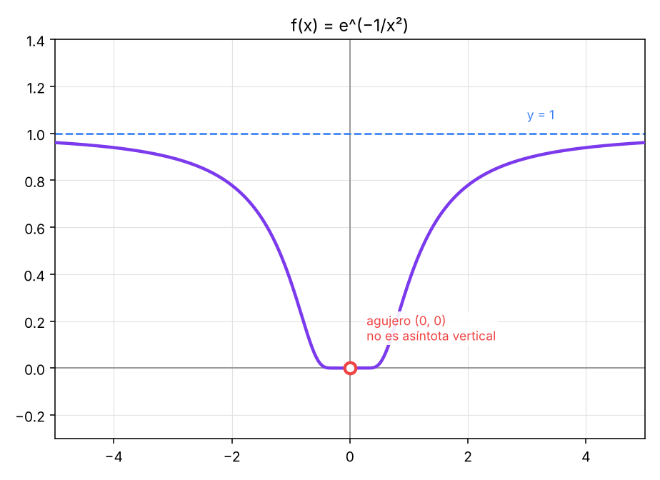
Qué ves en el dibujo: una campana partida en dos, simétrica respecto al eje Y. A cada lado la curva sube desde el eje X, cerca de x = 0, y se aplana acercándose a la raya y = 1 sin tocarla. En x = 0 hay un círculo rojo vacío en (0, 0): la curva llega a ese punto pero el punto no existe. No hay raya vertical, porque la curva no se dispara.
Dibujo del método: la línea con los puntos y los números que probamos. Rojo = punto prohibido. Azul = número que pruebo y lo que sale. Verde = cortes. Para las horizontales miro los dos extremos de la línea.
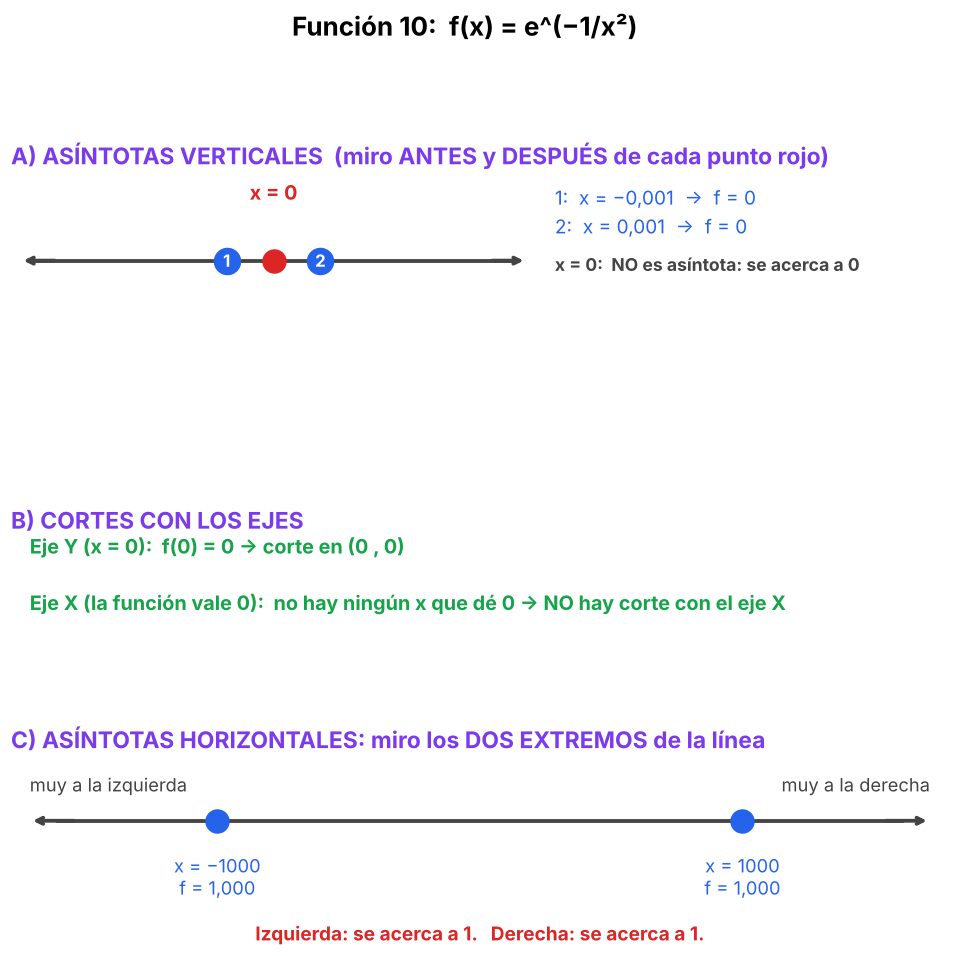
1. Dominio
1Mira el exponente: −1/x². Hay una x abajo, no puede ser 0.
1e elevado a algo siempre es positivo. Nunca vale 0.
NO hay corte con el eje X.
5. Asíntotas verticales
1Mira qué pasa cerca de x = 0. x = 0,5: −1/0,25 = −4, e^(−4) = 0,018. x = 0,1: −1/0,01 = −100, e^(−100) ≈ 0. x = 0,01: e^(−10000) ≈ 0.
2La función se acerca a 0, NO se dispara. Esto es lo contrario de una asíntota vertical.
3Es un "agujero": la curva llega a (0, 0) pero ese punto no existe.
Asíntotas verticales: no hay.
6. Asíntota horizontal u oblicua
1Con x enorme: x = 10: −1/100 = −0,01, e^(−0,01) = 0,990. x = 100: e^(−0,0001) = 0,9999.
2El exponente se acerca a 0 y e⁰ = 1.
3Pasa igual por la izquierda (es par).
Asíntota horizontal: y = 1. Oblicua: no hay.
7. Rango
1El exponente t = −1/x²: x² es siempre positivo, así que 1/x² es positivo y t = −1/x² es SIEMPRE negativo.
2Además t puede ser cualquier número negativo: grande en negativo cuando x es pequeño, cerca de 0 cuando x es grande.
3e^t con t negativo da valores entre 0 y 1 (por ejemplo e^(−1) = 0,37; e^(−5) = 0,007).
4Con letras: y = e^(−1/x²). ln y = −1/x². x² = −1/ln y. Para que x² sea positivo, ln y tiene que ser negativo, o sea 0 < y < 1.
Rango: (0, 1). Los dos extremos son abiertos.
Resumen de la función 10:
Apartado
Respuesta
Cómo ha salido
Dominio
ℝ − {0}
x² no puede ser 0 abajo
Par o impar
PAR
Solo aparece x²
Corte eje Y
NO HAY
0 no está en el dominio
Corte eje X
NO HAY
e^algo nunca vale 0
Asíntotas verticales
No hay
Cerca de 0 la función tiende a 0
Asíntota horizontal
y = 1
−1/x² tiende a 0 y e⁰ = 1
Asíntota oblicua
No hay
Ya hay horizontal
Rango
(0, 1)
−1/x² es siempre negativo
Función 11. EXPONENCIAL MEZCLADA: f(x) = e^(1/x) / x
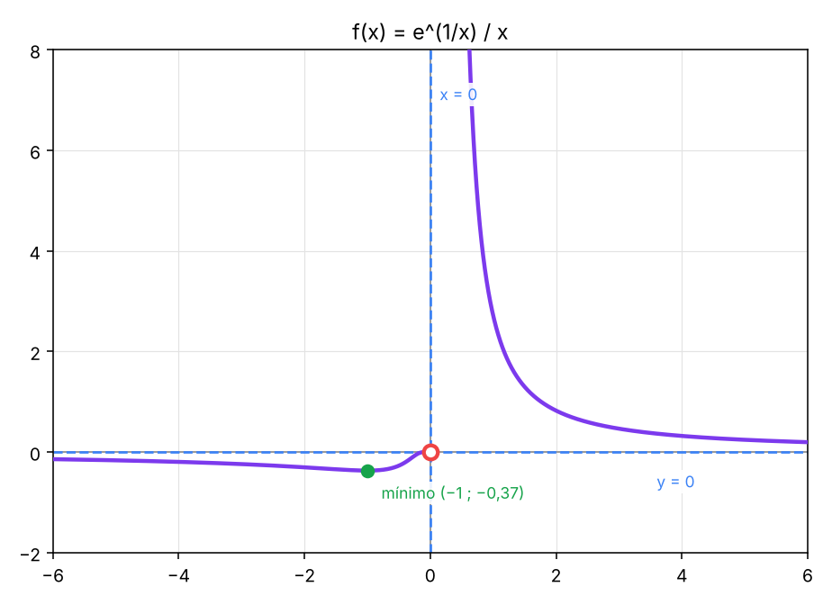
Qué ves en el dibujo: a la derecha del eje Y, una curva que baja desde arriba del todo (pegada a x = 0) hacia el eje X sin tocarlo. A la izquierda, una curva con una "barriga" hacia abajo: sale del eje X, baja hasta un mínimo en el punto (−1 ; −0,37) y vuelve a subir acercándose al origen. La raya y = 0 (el eje X) es la asíntota horizontal.
Dibujo del método: la línea con los puntos y los números que probamos. Rojo = punto prohibido. Azul = número que pruebo y lo que sale. Verde = cortes. Para las horizontales miro los dos extremos de la línea.
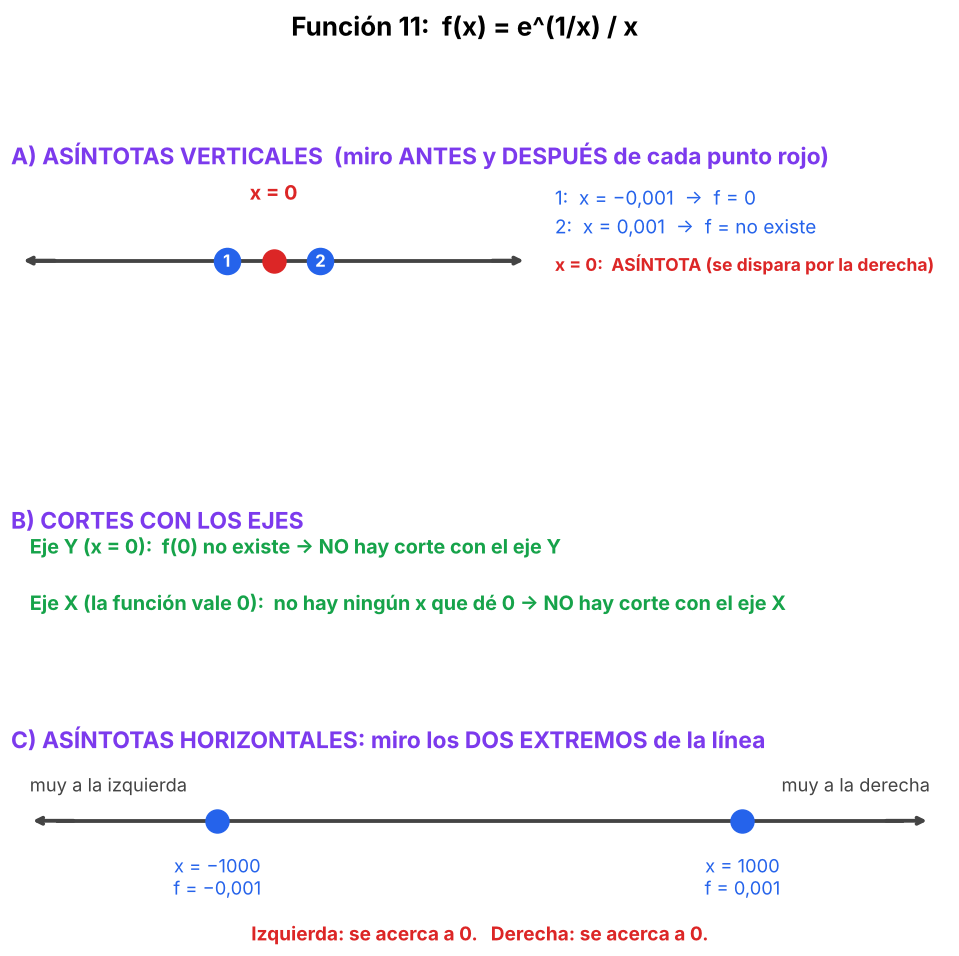
1. Dominio
1Mira el denominador x y el exponente 1/x: los dos exigen x ≠ 0.
Dominio: ℝ − {0}.
2. Par o impar
1El dominio es simétrico.
2Cambia x por −x: f(−x) = e^(−1/x) / (−x) = −e^(−1/x) / x.
3¿Es f(x)? No. ¿Es −f(x) = −e^(1/x)/x? Tampoco, porque e^(−1/x) no es e^(1/x).
4Con números: f(1) = e / 1 = 2,718. f(−1) = e^(−1) / (−1) = −0,368. Si fuera impar saldría −2,718.
NI PAR NI IMPAR.
3. Corte con el eje Y
1x = 0 no está en el dominio.
NO hay corte con el eje Y.
4. Corte con el eje X
1Una fracción vale 0 si el numerador vale 0: e^(1/x) = 0. Esa e^algo nunca vale 0.
NO hay corte con el eje X.
5. Asíntotas verticales
1Mira x = 0 por los dos lados.
2Por la derecha: x = 0,1 → e^10 / 0,1 = 220 260. x = 0,01 → e^100 / 0,01, gigantesco. Va a +∞.
3Por la izquierda: x = −0,1 → e^(−10) / (−0,1) = −0,0005. x = −0,01 → e^(−100) / (−0,01) ≈ 0. Va a 0 (la exponencial se hace pequeña mucho más rápido de lo que el denominador la agranda).
4Con que se dispare por la derecha basta.
Asíntota vertical: x = 0.
6. Asíntota horizontal u oblicua
1Con x enorme, 1/x es casi 0 y e^(1/x) es casi 1.
2Queda f(x) ≈ 1 / x, que se acerca a 0. x = 100: e^0,01 / 100 = 0,0101. x = −100: e^(−0,01) / (−100) = −0,0099.
3Pasa igual por los dos lados.
Asíntota horizontal: y = 0. Oblicua: no hay.
7. Rango
1Para esta hay que usar un truco. Sea t = 1/x. Entonces e^(1/x) / x = e^t · t = t·e^t. Es decir f = t·e^t.
2Caso x positivo (t positivo): t·e^t es positivo. Cuando t crece, t·e^t crece sin parar (t = 1: 2,72; t = 2: 14,8; t = 5: 742). Cuando t se acerca a 0, se acerca a 0. Así que da todos los positivos: (0, +∞).
3Caso x negativo (t negativo): t·e^t es negativo. Cuando t es muy negativo (x cerca de 0 por la izquierda) se acerca a 0. Cuando t se acerca a 0 (x muy negativo) también se acerca a 0. Entre medias baja y vuelve a subir: hay un mínimo.
4Para hallar el mínimo hay que derivar: la derivada de t·e^t es e^t + t·e^t = (1 + t)·e^t. Vale 0 si 1 + t = 0, o sea t = −1.
5En t = −1 el valor es −1·e^(−1) = −0,368. Eso corresponde a x = 1/t = −1.
6Comprobación: t = −2 (x = −0,5): −2·e^(−2) = −0,271. t = −0,5 (x = −2): −0,5·e^(−0,5) = −0,303. Los dos son mayores que −0,368, así que −0,368 es el mínimo.
7Para x negativo, entonces, la función da los valores entre −0,368 (incluido) y 0 (no incluido).
Rango: [−1/e, 0) ∪ (0, +∞), con −1/e ≈ −0,37.
Resumen de la función 11:
Apartado
Respuesta
Cómo ha salido
Dominio
ℝ − {0}
x ≠ 0
Par o impar
NI PAR NI IMPAR
f(1) = 2,718 y f(−1) = −0,368
Corte eje Y
NO HAY
0 no está en el dominio
Corte eje X
NO HAY
e^algo nunca vale 0
Asíntotas verticales
x = 0
Por la derecha va a +∞
Asíntota horizontal
y = 0
Queda aproximadamente 1/x
Asíntota oblicua
No hay
Ya hay horizontal
Rango
[−1/e, 0) ∪ (0, +∞)
Con t = 1/x sale t·e^t; el mínimo está en t = −1
Función 12. EXPONENCIAL MEZCLADA: f(x) = x · e^(1/x)
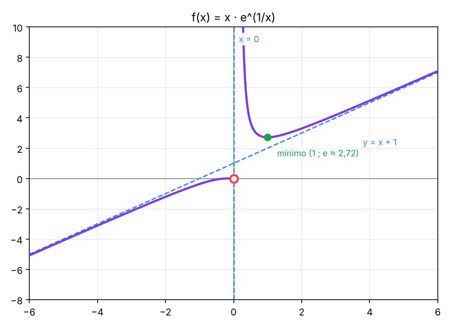
Qué ves en el dibujo: a la derecha del eje Y la curva baja desde arriba del todo (pegada a x = 0) hasta un mínimo en el punto (1 ; e ≈ 2,72) y luego sube siguiendo la recta inclinada y = x + 1. A la izquierda la curva viene desde abajo, pegada a la misma recta inclinada, y se acerca al origen por debajo del eje X. La raya inclinada es la asíntota oblicua.
Dibujo del método: la línea con los puntos y los números que probamos. Rojo = punto prohibido. Azul = número que pruebo y lo que sale. Verde = cortes. Para las horizontales miro los dos extremos de la línea.
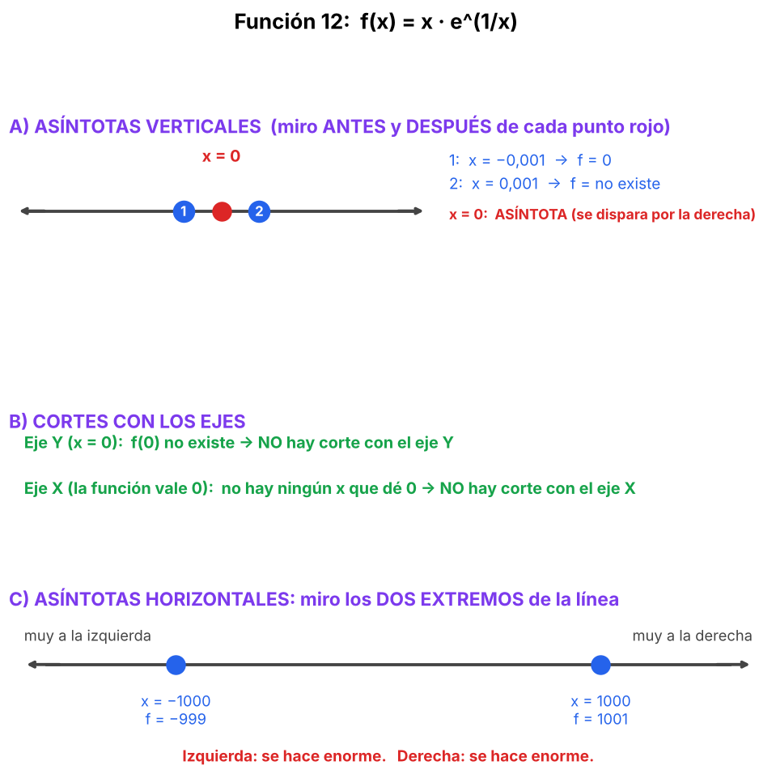
1. Dominio
1El exponente 1/x exige x ≠ 0.
Dominio: ℝ − {0}.
2. Par o impar
1El dominio es simétrico.
2Cambia x por −x: f(−x) = (−x) · e^(−1/x) = −x · e^(−1/x).
3No es f(x) ni −f(x) (el exponente quedó con signo cambiado).
4Con números: f(1) = 1 · e = 2,718. f(−1) = −1 · e^(−1) = −0,368. Si fuera impar saldría −2,718.
NI PAR NI IMPAR.
3. Corte con el eje Y
1x = 0 no está en el dominio.
NO hay corte con el eje Y.
4. Corte con el eje X
1Un producto vale 0 si un factor vale 0. x = 0 está prohibido, y e^algo nunca vale 0.
NO hay corte con el eje X.
5. Asíntotas verticales
1Mira x = 0 por los dos lados.
2Por la derecha: x = 0,1 → 0,1 · e^10 = 2 203. x = 0,01 → 0,01 · e^100 = 2,7·10⁴¹. Va a +∞ (la exponencial gana a la x pequeña).
3Por la izquierda: x = −0,1 → −0,1 · e^(−10) = −0,000005. Va a 0.
4Basta con el lado derecho.
Asíntota vertical: x = 0.
6. Asíntota horizontal u oblicua
1Horizontal: con x enorme, x · e^(1/x) ≈ x · 1 = x, que se hace enorme. No tiende a ningún número. No hay horizontal.
2Oblicua: se busca una recta y = m·x + b. Aquí no se puede hacer la división como en las racionales, así que se aproxima la exponencial.
3Para h pequeño, e^h ≈ 1 + h. Con h = 1/x: e^(1/x) ≈ 1 + 1/x.
4Entonces x · e^(1/x) ≈ x · (1 + 1/x) = x + 1.
5Con números: x = 100: 100 · e^0,01 = 100 · 1,01005 = 101,005. Casi x + 1 = 101. x = 1000: 1000 · e^0,001 = 1001,0005, casi 1001.
6A la izquierda: x = −100: −100 · e^(−0,01) = −100 · 0,99005 = −99,005, casi x + 1 = −99.
7Con el método de las fórmulas, el resultado es el mismo: m = límite de f(x)/x = límite de e^(1/x) = 1, y b = límite de (f(x) − x) = límite de x·(e^(1/x) − 1) = 1.
Asíntota oblicua: y = x + 1. Horizontal: no hay.
7. Rango
1Sea t = 1/x. Entonces x = 1/t y f = (1/t) · e^t = e^t / t.
2Caso x positivo (t positivo): e^t / t es positivo. Hay un mínimo; para hallarlo, deriva: la derivada de e^t/t es (e^t·t − e^t) / t² = e^t · (t − 1) / t². Vale 0 si t = 1.
3En t = 1 el valor es e¹ / 1 = e ≈ 2,718 (esto corresponde a x = 1). Comprobación: t = 2 (x = 0,5): e²/2 = 3,69. t = 0,5 (x = 2): e^0,5/0,5 = 3,30. Los dos son mayores que 2,718, así que ese es el mínimo.
4Cuando t crece o se acerca a 0, e^t / t crece sin parar. Para x positivo, la función da [e, +∞).
5Caso x negativo (t negativo): e^t / t es negativo. Cuando t es muy negativo (x cerca de 0), se acerca a 0. Cuando t se acerca a 0 (x muy negativo), baja sin parar a −∞. Siempre baja, sin mínimo.
6Para x negativo, la función da (−∞, 0).
Rango: (−∞, 0) ∪ [e, +∞).
Resumen de la función 12:
Apartado
Respuesta
Cómo ha salido
Dominio
ℝ − {0}
1/x exige x ≠ 0
Par o impar
NI PAR NI IMPAR
f(1) = 2,718 y f(−1) = −0,368
Corte eje Y
NO HAY
0 no está en el dominio
Corte eje X
NO HAY
x = 0 prohibido y e^algo ≠ 0
Asíntotas verticales
x = 0
Por la derecha va a +∞
Asíntota horizontal
No hay
Crece como x
Asíntota oblicua
y = x + 1
e^(1/x) ≈ 1 + 1/x
Rango
(−∞, 0) ∪ [e, +∞)
Mínimo en x = 1 con valor e
PARTE 9. CHULETARIO DE UNA PÁGINA
Esto es lo que tienes que llevarte en la cabeza al examen.
Las tres prohibiciones (dominio)
Denominador: distinto de cero. Se resuelve igualándolo a cero y quitando esas soluciones.
Dentro de una raíz cuadrada: mayor o IGUAL que cero. El borde SÍ entra, corchete.
Dentro de un ln: mayor que cero, SIN igual. El borde NO entra, paréntesis.
La e no prohíbe nada por sí misma.
Par o impar
Primero: ¿el dominio es simétrico? Si no, ya está: no es ni par ni impar.
Método seguro: cambia x por (−x). Igual es par, con signo cambiado es impar, otra cosa es ninguna.
Exponente par, el menos desaparece. Exponente impar, el menos se queda.
En fracciones: par/par da par, impar/impar da par, y si se mezclan da impar.
Si hay SUMAS de trozos de distinto tipo, no es ni par ni impar.
Cortes
Con el eje Y: calcula f(0), si el 0 está en el dominio. Como mucho hay uno.
Con el eje X: iguala el NUMERADOR a cero, y comprueba que las soluciones estén en el dominio.
Una exponencial nunca corta el eje X.
Un logaritmo corta el eje X donde lo de dentro vale 1.
Asíntotas
Verticales: donde el denominador vale cero y el numerador no. Puede haber varias.
Si arriba y abajo se anulan a la vez: agujero, no asíntota. Simplifica.
Grado arriba menor que abajo: horizontal y = 0.
Grados iguales: horizontal y = coeficiente de arriba entre coeficiente de abajo.
Arriba un grado más: oblicua. Divide y quédate con la parte de la recta.
Arriba dos grados más o más: no hay ninguna.
Horizontal y oblicua nunca van juntas.
Dentro de una raíz cuadrada, el grado se parte por la mitad.
Rango
Son las alturas que alcanza la gráfica.
Método: escribe y, despeja la x, y mira para qué valores de y existe esa x.
Si al despejar te queda x al cuadrado, obliga a que lo de la derecha sea mayor o igual que cero.
En racionales sencillas, el valor que falta suele ser la asíntota horizontal.
Los cinco errores que más caen
1. Decir que el dominio de una raíz es la zona de dentro. Comprueba siempre metiendo el 0.
2. Confundir las soluciones del denominador con los cortes. El denominador da asíntotas; el numerador da cortes.
3. Decir que de x² = 4 sale el 4. Salen el 2 y el −2.
4. Buscar oblicua cuando ya hay horizontal.
5. Calcular f(0) cuando el 0 no está en el dominio.
PARTE 10. REFUERZO: LAS BASES QUE MÁS CUESTAN
Esta parte recoge, con dibujo, las dos bases sobre las que se apoya todo lo demás: la recta y = m·x + b y la asíntota oblicua con su división. Va todo paso a paso, una cosa por línea. Los casos del agujero, la función par, la asíntota que se toca y la raíz están resueltos enteros, con su dibujo, en la Parte 8.
10.1 La recta y = m·x + b (la base de las asíntotas)
Cualquier recta se escribe así: y = m·x + b. La letra m dice lo inclinada que está. La letra b dice a qué altura corta el eje Y.
m: por cada paso de 1 hacia la derecha, la recta sube m. Si m = 2, sube 2.
b: es la altura cuando x = 0. Por eso es donde la recta cruza el eje Y.
Si m = 0 la recta es plana. Una asíntota horizontal es una recta con m = 0, por eso es "y = un número" y no lleva x.
Recta
m
b
Cómo es
y = 2x
2
0
Inclinada, pasa por el centro (0,0)
y = 2x + 5
2
5
Igual de inclinada, pero empieza en altura 5
y = 3x − 1
3
−1
Más inclinada, empieza en −1
y = 4
0
4
Plana: es una horizontal
Comprobación con números para y = 2x + 5. Con x = 0 sale y = 5. Con x = 1 sale y = 7. Con x = 2 sale y = 9. Cada paso a la derecha, la y sube 2.
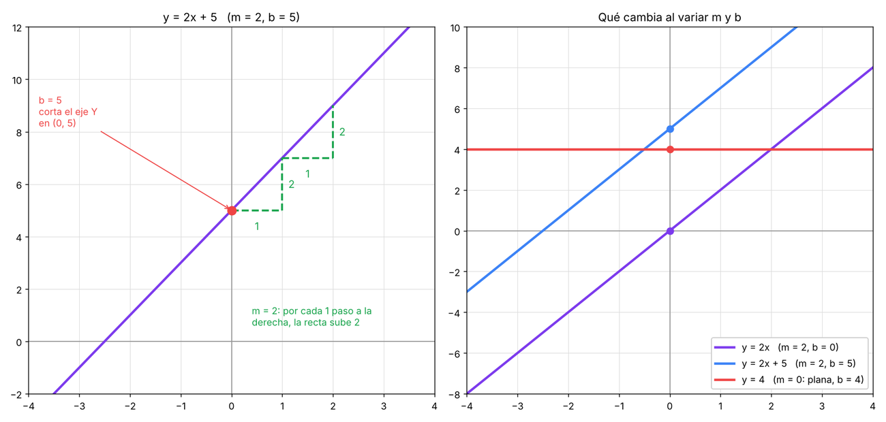
A la izquierda: el punto rojo es b y los escalones verdes son m. A la derecha: mover b sube o baja la recta; m = 0 la deja plana.
Se hace como una división de números. Primero un ejemplo que ya sabes: 17 entre 5. El 5 cabe 3 veces. 3 por 5 es 15. A 17 le quitas 15 y sobran 2. Se escribe 17 = 5·3 + 2.
1Mira cuántas veces cabe lo más grande de abajo (x²) en lo más grande de arriba (2x³). 2x³ ÷ x² = 2x.
2Multiplica ese 2x por TODO el divisor. 2x · (x² − 9) = 2x³ − 18x.
3Réstalo a lo de arriba. 2x³ − (2x³ − 18x) = 2x³ − 2x³ + 18x = 18x. El menos de delante del paréntesis cambia el signo de todo lo de dentro.
4Mira si x² cabe todavía en 18x. No cabe, porque 18x no tiene x². Paras. Resultado: 2x con un resto de 18x.
2x³ = (x² − 9)·2x + 18x, igual que 17 = 5·3 + 2.
Divide todo entre (x² − 9) y queda: 2x³/(x²−9) = 2x + 18x/(x²−9). La función es "2x" más un trocito extra. Mira cuánto vale ese trocito cuando x crece.
x
2x
Trocito 18x/(x²−9)
f(x)
100
200
0,18
200,18
1000
2000
0,018
2000,018
10000
20000
0,0018
20000,0018
Cuanto más grande es x, más diminuto es el trocito. La función se parece cada vez más a 2x. Por eso la asíntota oblicua es y = 2x.
Ficha completa de f(x) = 2x³ / (x² − 9):
Apartado
Respuesta
Cómo ha salido
Dominio
ℝ − {−3, 3}
x² − 9 = 0 da x = 3 y x = −3
Par o impar
IMPAR
f(−x) = −f(x). Y el dominio es simétrico
Corte eje Y
(0, 0)
f(0) = 0
Corte eje X
(0, 0)
Numerador 2x³ = 0 → x³ = 0 → x = 0. Está permitido
Asíntotas verticales
x = 3 y x = −3
Arriba, en x = ±3, vale ±54: no es 0, así que no es agujero
Asíntota horizontal
No hay
Hay oblicua, no puede haber las dos
Asíntota oblicua
y = 2x
Grado 3 contra grado 2. División: 2x con resto
Rango
ℝ (todos)
Entre las dos verticales la curva va de +∞ a −∞ sin saltos, así que pasa por todos los números
Por qué x³ = 0 da solo x = 0: un número multiplicado por sí mismo tres veces solo da 0 si ese número es 0. Con 2 sale 8, con −2 sale −8, con 5 sale 125. A diferencia de x² = 4, aquí a la derecha hay un 0 y no hay dos candidatos.
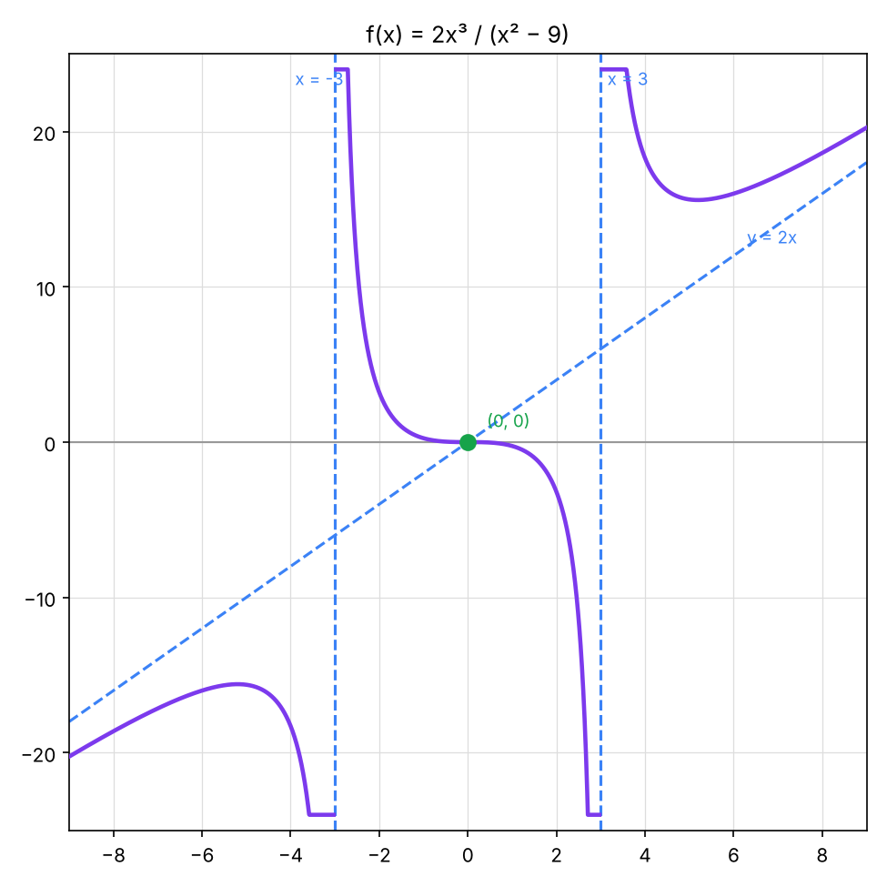
Las dos rayas verticales azules son x = −3 y x = 3. La raya inclinada azul es y = 2x. El punto verde es el (0,0). El trozo de en medio baja de +∞ a −∞.
10.3 Qué te preguntan de verdad en el examen
Mirando los exámenes oficiales de Cálculo registrados (12052, 2200230, 2401480, 2410440, 2500130 y 2512770), el patrón es siempre el mismo: te dan UNA función al principio de un bloque y te hacen varias preguntas seguidas sobre ella. Las funciones han sido: 6x/(x²−1) (dos veces), x³/(x²−1), x³·e^(−x⁴) y −(1/x⁴)·e^(1/x³). Las preguntas que más se repiten son el dominio (9 veces) y el recorrido (4 veces: ¿qué valor NO pertenece al recorrido?).
Todavía no ha caído en esos registros una función con raíz ni con logaritmo como función principal, ni un caso de agujero. Eso no garantiza que no caigan: son los exámenes que tenemos, no todos los que existen.
Practica sobre todo la ficha completa con funciones racionales (dominio, par o impar, cortes, asíntotas y rango) y con exponenciales del tipo e^(1/x).
10.4 Para practicar
Haz estas dos con la ficha de 7 apartados y compara con la solución.
Función
Pista
f(x) = x² / (x² − 4)
Mismo grado arriba y abajo: horizontal. Comprueba si hay agujero.